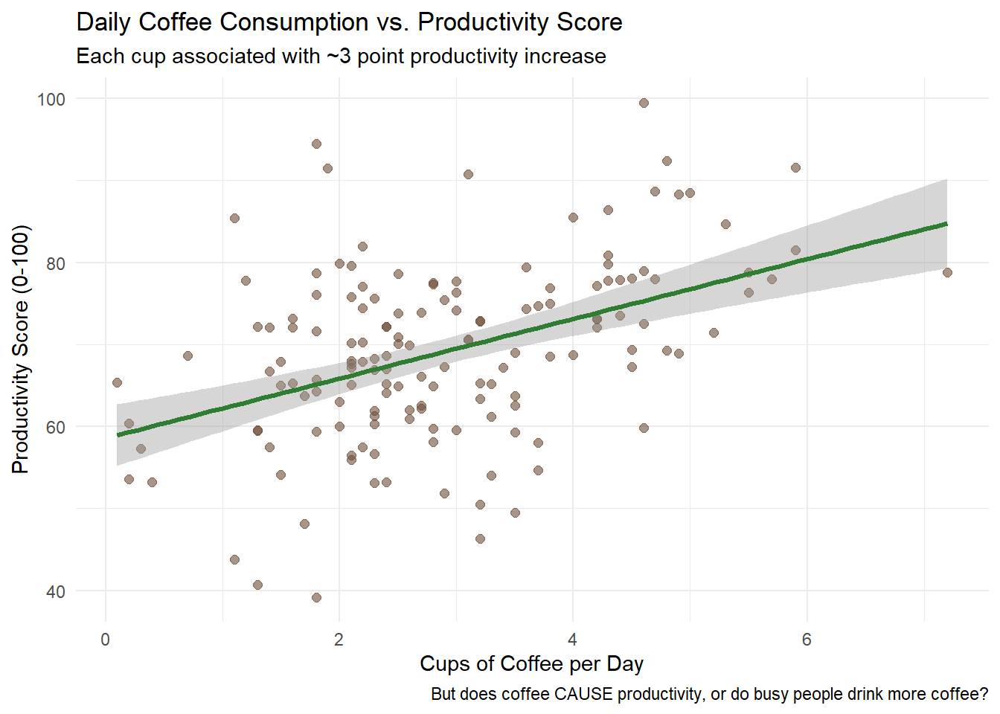
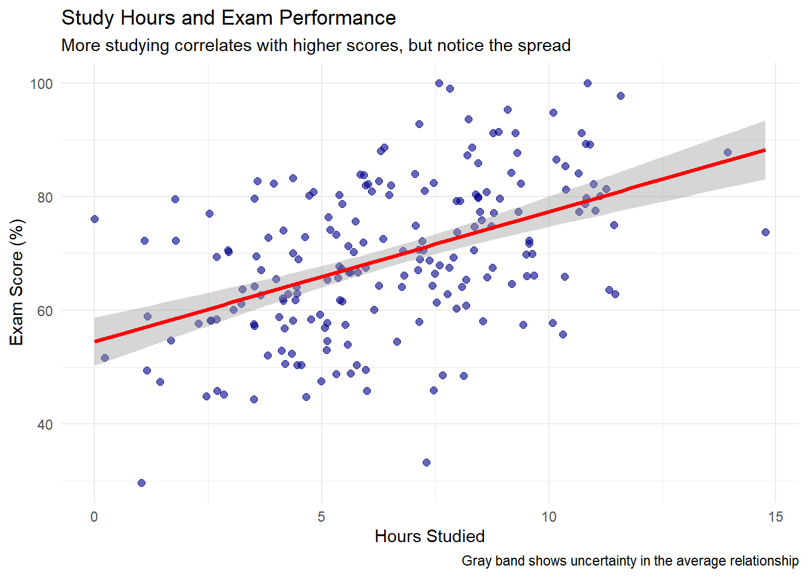
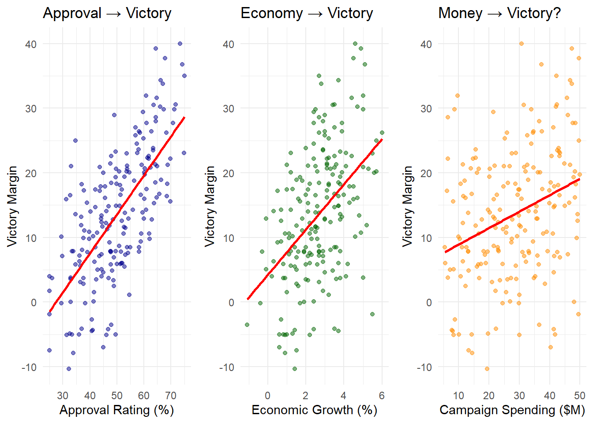

1Introduction to Statistics and Data Analysis for Political Science
Rounding and Scientific Notation in Statistics
Main Rule: Unless otherwise specified, round the decimal parts of decimal numbers to at least 2 significant figures. In statistics, we often work with long decimal parts and very small numbers — don’t round excessively in intermediate steps, round at the end of calculations.
Rounding in Statistical Context
The decimal part consists of digits after the decimal point. In statistics, it’s particularly important to maintain appropriate precision:
Descriptive statistics:
Mean: \bar{x} = 15.847693... \rightarrow 15.85
Standard deviation: s = 2.7488... \rightarrow 2.75
Correlation coefficient: r = 0.78432... \rightarrow 0.78
Very small numbers (p-values, probabilities):
p = 0.000347... \rightarrow 0.00035 or 3.5 \times 10^{-4}
Very small standard deviations: - \sigma = 0.000892 = 8.92 \times 10^{-4}
Large numbers (rare in basic statistics): - N = 1\,234\,567 = 1.23 \times 10^6
When in doubt: Better to keep an extra digit than to round too aggressively
1.1 What Is Statistics?
Statistics is the science of learning from data under uncertainty.
Statistics is a way to learn about the world from data when results vary and are uncertain. It teaches how to collect data wisely, spot patterns, estimate population quantities, and make predictions—always stating how wrong we might be.
1.2 The Three Core Activities of Statistics
Every statistical analysis does at least one of these three things:
1. Describe: “What does our data show?”
We summarize and visualize data to understand what we’re working with. This means creating clear graphs, calculating averages, and spotting patterns.
Example: Plotting unemployment rates before and after a Universal Basic Income (UBI) pilot program starts, or showing voter turnout across different age groups.
Understanding Policy Pilots
A pilot program is a small-scale, time-limited test of a policy before broader implementation.
For UBI pilots:
Selected participants receive regular, unconditional cash payments for a fixed period (typically 6-24 months)
Researchers compare outcomes between those offered the pilot and similar people not offered it
If participants are chosen by lottery, differences can be interpreted as causal effects of the program
Why pilots matter: They let policymakers test ideas on a small scale before committing to expensive, large-scale programs.
2. Infer: “What can we learn about the bigger picture?”
We use sample data to make educated guesses about larger populations, always acknowledging our uncertainty.
Example: Using a poll of 1,000 people to estimate how the entire country might vote, complete with a margin of error.
3. Predict & Decide: “What might happen next, and what should we do?”
We use patterns from the past to forecast the future and guide decisions, always showing how confident (or uncertain) we are.
Example: Predicting election turnout to decide how many polling stations to open, or forecasting economic impacts of a new policy.
1.3 Key Questions Statistics Helps Answer
Does a universal basic income pilot change how much people work?
Do changes to voting rules affect who shows up to vote?
What do opinion polls really tell us about election outcomes?
How does education spending relate to student performance?
Is there a gender pay gap in your field, and how large is it?
Always Start with Description
Before diving into complex analyses, look at your data. Good statistics starts with good pictures and simple summaries.
For UBI research: Plot unemployment rates in pilot areas versus similar non-pilot areas over time. Mark when the program started. Does anything obvious jump out?
For voting research: Show turnout rates over several elections. Mark when electoral rules changed. Do you see any clear before/after patterns?
Why this matters: If you can’t explain what your data shows in plain English, you’re not ready for fancy models.
Opinion Polls: Why One Number Isn’t Enough
1.4 The Core Problem
Polls use samples of people rather than surveying the entire population, so results naturally vary. A result like “Candidate A: 52%, Candidate B: 48%” is incomplete without expressing the uncertainty inherent in sampling.
1.5 The Golden Rule of Polling
With approximately 1,000 randomly selected respondents, the 95% margin of sampling error is roughly ±3 percentage points in the worst-case scenario. When a poll reports “52%,” the true population support likely falls between 49% and 55% — assuming no other sources of error.
1.6 Understanding 95% Confidence
Consider repeating the same poll 100 times with different random samples of 1,000 people. Each time, you calculate the ±3% range around your result. Approximately 95 of those 100 ranges would contain the true population value.
The remaining 5 times represent sampling variation—occasions when the random sample happens to differ substantially from the population.
1.7 Why Choose 95%?
The confidence level represents a trade-off between precision and reliability:
90% confidence → narrower intervals, but incorrect more frequently
95% confidence → moderate width (most common choice)
99% confidence → wider intervals, but incorrect less frequently
The difference between candidates carries more uncertainty than individual percentages. With n≈1,000, a 4-percentage-point lead may be within the margin of sampling error when accounting for random sampling variation.
1.9 The Mathematical Foundation
For a sample proportion \hat{p} from n respondents, the margin of sampling error is:
\text{Margin of sampling error (95\%)} \approx 1.96 \times \sqrt{\frac{\hat{p}(1-\hat{p})}{n}}
Understanding the 1.96 Multiplier
The value 1.96 represents a mathematical constant that ensures 95% coverage. Here is the conceptual explanation:
When drawing many samples from a population, the sample results form a predictable pattern around the true value. To capture the middle 95% of all possible sample results, statisticians have determined that the interval must extend 1.96 times the typical variation in each direction from the sample result.
This multiplier ensures that if you repeated the polling process many times, approximately 95% of your calculated intervals would contain the true population parameter.
Worst-Case Calculation
The margin of sampling error reaches its maximum when \hat{p} = 0.5 (a 50-50 split):
Treatment of undecided responses and third-party candidates
Margin of sampling error for individual candidates
Uncertainty in vote margins when possible
1.11 Key Principles
Primary rule: Differences smaller than the margin of sampling error may represent random sampling variation rather than meaningful differences.
Critical limitation: The margin of sampling error addresses only random variation from sampling. It does not account for systematic errors, which are often larger and more consequential:
Non-response bias (certain groups declining to participate)
Coverage bias (certain groups absent from contact lists)
Question wording effects and response order
Social desirability bias (respondents giving socially acceptable answers)
Timing effects and current events influence
These systematic errors can cause polls to miss the true value by much more than ±3%, yet they are invisible in the reported margin of sampling error.
Rule of thumb: Don’t over-interpret differences smaller than the margin of error—they might just be noise.
Random Error vs. Systematic Error
Random error is the unpredictable variability that occurs in any sample-based study. The larger the sample, the smaller the random error. This is what the margin of error accounts for.
Systematic error (bias) is a consistent shift in results in one direction. It can result from:
Unrepresentative samples (e.g., polling only landline phones)
Leading questions (“Do you support wasting taxpayer money on program X?”)
Non-response from certain groups (e.g., young people less likely to answer calls)
Key difference: A larger sample reduces random error but does not eliminate systematic error. A poll of 10,000 people with systematic bias can be less accurate than a poll of 1,000 people without such bias.
Regression: Measuring Average Differences And Modeling Relationship Between Variables
At its heart, regression answers: “On average, how much do outcomes differ between groups?”
Y_i = \alpha + \beta X_i + \varepsilon_i
Translation into English:
Y_i: The outcome we care about (e.g., hours worked per week)
X_i: Group membership (e.g., X=1 for UBI recipients, X=0 for others)
\beta: The average difference in outcomes between groups
\varepsilon_i: Everything else that affects the outcome
Example: If \beta = -2 in a study of UBI and work hours, UBI recipients worked 2 fewer hours per week on average than non-recipients.
Critical point: This shows a relationship or association. By itself, it does not prove the UBI caused the difference.
The Challenge of Causality
The hardest question in statistics: Did the policy cause the change, or would it have happened anyway?
What We Really Want to Know
For the same people in the same circumstances: What would happen with the policy versus without it? Since we can’t observe both realities for the same people, we need clever comparisons.
Strategies for Better Causal Inference
Random Assignment (The Gold Standard) - Randomly assign some people to get UBI, others not - Groups are similar by design, so differences are likely due to UBI
Before/After with Comparison Groups - Compare how much the UBI group changes versus how much a similar non-UBI group changes over the same period - Controls for other things happening at the same time
Sharp Rules or Cutoffs - Compare people just above vs. just below eligibility thresholds - Example: Compare 17-year-olds to 18-year-olds for voting studies
Causal Claims Checklist
Before believing any causal claim, ask:
What exactly is the treatment/policy?
What is the outcome being measured?
Who is the comparison group?
Why is this comparison fair?
Could other explanations account for the difference?
Key Takeaways
Always describe first: Understand your data through visualization and summary statistics before attempting complex modeling
Embrace uncertainty: Report margins of error and confidence intervals, not just point estimates
Association ≠ Causation: Regression shows relationships between variables; establishing causation requires careful research design
Fair comparisons matter: Good causal inference depends on comparing like with like—the closer the comparison groups, the stronger your conclusions
Be transparent: Good statistics clearly communicates methods, limitations, and uncertainty to help others evaluate your work
1.12 Randomness: a foundation of statistical inference
What is randomness?
In statistics, randomness is an orderly way to describe uncertainty: individual outcomes are unpredictable, yet in long sequences of repetitions stable regularities emerge (e.g., frequencies, means).
Two perspectives
Single realisation — we cannot determine how a specific voter will vote at a given moment.
Aggregate — we can describe the share of voters supporting a party and quantify the associated estimation uncertainty.
Note
Epistemic vs. ontological randomness
Epistemic (due to incomplete knowledge): we treat an outcome as random because not all determinants are observed or conditions are not controlled.
Examples:
the decision of an individual respondent in a poll (we do not know the full set of motivations),
measurement error in a survey (limited precision, item nonresponse),
a coin toss modeled as random because minute, unobserved differences in initial conditions determine the outcome.
Ontological (intrinsic indeterminacy): even complete knowledge does not remove outcome uncertainty.
Examples:
the time to radioactive decay of an atom.
Why Randomness Matters
Random sampling
Reduces systematic selection bias so the sample resembles the target population (in expectation).
Makes uncertainty quantifiable (e.g., margins of error; later we’ll name these “confidence intervals”), assuming genuinely random selection and good coverage.
Random assignment (experiments)
Breaks the link between treatment and other factors, making groups comparable on average (both observed and unobserved).
Supports credible cause-and-effect claims (identifies average treatment effects under standard conditions).
The Power of Random Sampling (quick demo)
Suppose we take a random sample of n=1000 voters and observe \hat p = 0.55 (i.e., 55% support). Then:
Our best single-number estimate of the population share is \hat p = 0.55.
A typical “95\% range of plausible values” around \hat p can be approximated by
\hat p \;\pm\; 2\sqrt{\frac{\hat p(1-\hat p)}{n}}
\;=\;
0.55 \;\pm\; 2\sqrt{\frac{0.55\cdot 0.45}{1000}}
\approx
0.55 \pm 0.031,
i.e., roughly 52\%\text{–}58\% (about \pm 3.1 percentage points).
The width of this range shrinks predictably with sample size:
\text{width} \;\propto\; \frac{1}{\sqrt{n}}.
For example, increasing n from 1000 to 4000 cuts the range by about half.
Note
How to read the “95% range”
Imagine repeating the same random survey many times. In about 19 out of 20 such surveys, the computed range would include the true population percentage.
This rule-of-thumb assumes random sampling from the target population and similar survey conditions.
Non-sampling issues (nonresponse, coverage, measurement) or complex designs (e.g., clustering) can make the real uncertainty larger.
1.13 The Foundation: Law of Large Numbers
The Law of Large Numbers is one of the most important principles in statistics. It explains why we can make reliable inferences from samples, even when individual outcomes are unpredictable.
The basic idea: When you repeat a random process many times, the average result gets closer and closer to what you’d expect theoretically.
Visualizing the Law of Large Numbers: Coin Flips
Let’s see this in action with coin flips. A fair coin has a 50% chance of landing heads, but individual flips are unpredictable.
# Simulate coin flips and show convergenceset.seed(42)n_flips <-1000flips <-rbinom(n_flips, 1, 0.5) # 1 = heads, 0 = tails# Calculate cumulative proportion of headscumulative_prop <-cumsum(flips) /seq_along(flips)# Create data frame for plottinglln_data <-data.frame(flip_number =1:n_flips,cumulative_proportion = cumulative_prop)# Plot the convergenceggplot(lln_data, aes(x = flip_number, y = cumulative_proportion)) +geom_line(color ="steelblue", alpha =0.7) +geom_hline(yintercept =0.5, color ="red", linetype ="dashed", size =1) +geom_hline(yintercept =c(0.45, 0.55), color ="red", linetype ="dotted", alpha =0.7) +labs(title ="Law of Large Numbers: Coin Flip Proportions Converge to 0.5",x ="Number of coin flips",y ="Cumulative proportion of heads",caption ="Red dashed line = true probability (0.5)\nDotted lines = ±5% range" ) +scale_y_continuous(limits =c(0.3, 0.7), breaks =seq(0.3, 0.7, 0.1)) +theme_minimal()
What this shows:
Early flips show wild variation (first 10 flips might be 70% or 30% heads)
As we add more flips, the proportion stabilizes around 50%
The “noise” of individual outcomes averages out over time
The Mathematical Statement
Let A denote an event of interest (e.g., “heads on a coin flip”, “vote for party X”, “sum of dice equals 7”). If P(A) = p and we observe nindependent trials with the same distribution (i.i.d.), then the sample frequency of A:
\hat{p}_n = \frac{\text{number of occurrences of } A}{n}
converges to p as n increases.
Examples in Different Contexts
Dice example: The event “sum = 7” with two dice has probability 6/36 ≈ 16.7\%, while “sum = 4” has 3/36 ≈ 8.3\%. Over many throws, a sum of 7 appears about twice as often as a sum of 4.
Election polling: If population support for a party equals p, then under random sampling of size n, the observed frequency \hat{p}_n will approach p as n grows (assuming random sampling and independence).
Quality control: If 2% of products are defective, then in large batches, approximately 2% will be found defective (assuming independent production).
Why This Matters for Statistics
Bottom line: Randomness underpins statistical inference by turning uncertainty in individual outcomes into predictable distributions for estimates. The Law of Large Numbers guarantees that the “noise” of individual outcomes averages out, allowing us to:
Predict long-run frequencies
Quantify uncertainty (margins of error)
Draw reliable inferences from samples
Make probabilistic statements about populations
This principle works in surveys, experiments, and even quantum phenomena (in the frequentist interpretation).
1.14 Understanding Different Types of Unpredictability
Not all uncertainty is the same. Understanding different sources of unpredictability helps us choose appropriate statistical methods and interpret results correctly.
Concept
What is it?
Source of unpredictability
Example
Randomness
Individual outcomes are uncertain, but the probability distribution is known or modeled.
Fluctuations across realizations; lack of information about a specific outcome.
Dice roll, coin toss, polling sample
Chaos
Deterministic dynamics highly sensitive to initial conditions (butterfly effect).
Tiny initial differences grow rapidly → large trajectory divergences.
Weather forecasting, double pendulum, population dynamics
Entropy
A measure of uncertainty/dispersion (information-theoretic or thermodynamic).
Larger when outcomes are more evenly distributed (less predictive information).
Shannon entropy in data compression
“Haphazardness” (colloquial)
A felt lack of order without an explicit model; a mixture of mechanisms.
No structured description or stable rules; overlapping processes.
Traffic patterns, social media trends
Quantum randomness
A single outcome is not determined; only the distribution is specified (Born rule).
Fundamental (ontological) indeterminacy of individual measurements.
Electron spin measurement, photon polarization
Key Distinctions for Statistical Practice
Deterministic chaos ≠ statistical randomness: A chaotic system is fully deterministic yet practically unpredictable due to extreme sensitivity to initial conditions. Statistical randomness, by contrast, models uncertainty via probability distributions where individual outcomes are genuinely uncertain.
Why this matters: In statistics, we typically model phenomena as random processes, assuming we can specify probability distributions even when individual outcomes are unpredictable. This assumption underlies most statistical inference.
Quantum Mechanics and Fundamental Randomness
In the Copenhagen interpretation, randomness is fundamental (ontological): a single outcome cannot be predicted, but the probability distribution is given by the Born rule:
P(\text{outcome}) \propto \lvert \psi \rvert^{2}
This represents true randomness at the most basic level of nature, not just our ignorance of determining factors.
1.15 Inferential Statistics: From Samples to Populations
Note
Fundamental Principle: Statistics does not eliminate uncertainty—it helps us measure, manage, and communicate it effectively.
The Central Challenge
Research Question: What proportion of students support keeping the library open 24/7?
The Challenge:
Population: 20,000 students at the university
Practical constraint: Can only survey 100 students
Problem: Different samples will yield different results
Without Statistical Thinking: “60 out of 100 students said yes, therefore exactly 60% support it.”
With Statistical Thinking: “We estimate 60% support with a margin of error of ±10%. We can be reasonably confident the true support lies between 50% and 70%.”
The difference is acknowledging and quantifying uncertainty rather than pretending it doesn’t exist.
A Cautionary Tale: When Big Data Goes Wrong
Historical Example: The 1936 Literary Digest Poll
The Literary Digest conducted one of the largest polls in history with 2.4 million responses, predicting Alf Landon would defeat Franklin D. Roosevelt in the 1936 presidential election. Despite the massive sample size:
What went wrong? The poll suffered from systematic bias:
Selection bias in sampling frame:
Sources: telephone directories, automobile registrations, club memberships
Problem: In 1936, these sources overrepresented wealthy Americans who favored Landon
Result: The sample systematically excluded Roosevelt supporters
Non-response bias:
Only 24% of those contacted responded
Likely respondents: those with strong anti-Roosevelt opinions
Non-respondents: many Roosevelt supporters didn’t feel compelled to participate
Key Lessons:
A large biased sample is worse than a small representative sample
Standard errors only measure random error, not bias
Sample size cannot fix fundamental sampling problems
Representative sampling matters more than sample size
This disaster led to major improvements in polling methodology, including the development of probability sampling and response rate tracking.
From Error to Understanding: Modern Polling
Today’s polls, while much smaller than the Literary Digest’s 2.4 million responses, are far more accurate because they focus on:
Representative sampling: Using probability-based methods to ensure all groups have known chances of selection
Bias detection and correction: Monitoring response rates across demographics and adjusting for known biases
Uncertainty quantification: Reporting margins of error that honestly communicate the limits of what we know
Example: A modern poll of 1,000 randomly selected voters with a 3% margin of error is far more reliable than the Literary Digest’s massive but biased survey.
The Statistical Mindset
Statistical thinking transforms how we approach uncertainty:
Before: “This sample gives us the answer” After: “This sample gives us evidence, with known limitations”
Before: “Larger samples are always better” After: “Representative samples with quantified uncertainty are better”
Before: “We either know something or we don’t” After: “We know things with varying degrees of confidence”
This mindset is essential not just for conducting research, but for being an informed consumer of statistics in news, policy debates, and everyday decisions.
Research Question: What proportion of students support keeping the library open 24/7?
The Challenge: - Population: 20,000 students at the university - Practical constraint: Can only survey 100 students - Problem: Different samples will yield different results
Without Statistical Thinking: “60 out of 100 students said yes, therefore 60% support it.”
With Statistical Thinking: “We estimate 60% support with a margin of error of ±10%. We can be reasonably confident the true support lies between 50% and 70%.”
1.16 Core Concepts of Statistical Inference
1.17 Essential Terminology
Key Concepts
Point estimate: The single value calculated from sample data (e.g., \hat{p} = 0.60)
Standard error (SE): Typical variability in the estimate across repeated samples
Margin of error: Range added around point estimate to account for sampling uncertainty
Confidence interval: Point estimate ± margin of error (e.g., 60% ± 3%)
When 60 out of 100 surveyed students support a proposal, \hat{p} = 0.60 is your point estimate—the best single approximation of the population parameter from your sample.
1.18 Sample Size and Precision
Sample size directly controls estimate precision. For binary outcomes near 50% with simple random sampling:
Sample Size
Margin of Error (95%)
Interpretation
n = 100
± 10%
Broad direction only
n = 400
± 5%
General trends
n = 1,000
± 3%
Actionable precision
n = 2,500
± 2%
High precision
n = 10,000
± 1%
Very high precision
Key insight: To halve the margin of error, you need four times the sample size (law of diminishing returns).
Mathematical basis: Since \text{MoE} \propto \frac{1}{\sqrt{n}}, precision improvements require quadratic increases in sample size.
1.19 Understanding Confidence Intervals
What 95% Confidence Means
Imagine repeating your study 100 times with different random samples. Each produces a confidence interval around its point estimate. Approximately 95 of those 100 intervals would contain the true population parameter.
The 95% describes the reliability of the method, not the probability for any specific interval.
Common Misinterpretation
Incorrect: “There’s a 95% chance the true value is between 57% and 63%”
Correct: “Using this method repeatedly, 95% of such intervals would contain the true value”
Confidence-Precision Trade-off
Higher confidence requires wider intervals:
90% confidence: ±2% (narrower, less certain)
95% confidence: ±3% (standard choice)
99% confidence: ±5% (wider, more certain)
1.20 Practical Example: Library Hours Survey
Research question: What percentage of students support extending library hours?
Three Sample Sizes, Same Result (60% support)
Small sample (n = 100) - 95% CI: 50% to 70% (±10%) - Interpretation: General direction clear, but too imprecise for policy decisions
Moderate sample (n = 400)
- 95% CI: 55% to 65% (±5%) - Interpretation: Adequate for understanding broad support levels
Large sample (n = 1,000) - 95% CI: 57% to 63% (±3%)
- Interpretation: Actionable precision for implementation decisions
1.21 Critical Limitations
What Margin of Error Does NOT Cover
Margin of error quantifies only random sampling variation. It does NOT account for:
Selection bias: Unrepresentative samples
Non-response bias: Systematic differences between respondents and non-respondents
Question wording effects: Leading or confusing questions
Social desirability bias: Socially acceptable responses
Coverage error: Missing population segments
These systematic errors can exceed ±3% by substantial margins.
When Standard Calculations Don’t Apply
Avoid traditional margins of error with: - Non-probability samples (convenience, volunteer surveys) - Heavy statistical weighting - Very low response rates - Complex survey designs without proper adjustments
1.22 Best Practices
Essential Reporting Elements
Complete uncertainty: Always report confidence intervals, never just point estimates
Methodology transparency: Acknowledge design features affecting precision
Appropriate claims: Match precision claims to actual methodology
Interpretation Guidelines
Do: - Treat small differences within the margin of error as potentially due to sampling variation - Consider systematic error sources beyond sampling - Report effective sample sizes when design complexity reduces precision
Don’t: - Over-interpret differences smaller than the margin of error - Claim traditional margins of error for non-probability samples - Ignore substantial non-response or coverage issues
Rule of thumb: For proportions near 50%, \text{MoE} \approx \frac{1}{\sqrt{n}}
The 1.96 Multiplier
For 95% confidence intervals, we multiply the standard error by 1.96. This value ensures that if you repeated the process many times, approximately 95% of your calculated intervals would contain the true population parameter.
1.24 Summary
Margin of error quantifies uncertainty from studying a sample rather than the entire population. Standard error measures typical sampling variability. 95% confidence intervals use methods that capture the true parameter 95% of the time across repeated applications.
Key insight: These measures help distinguish meaningful differences from sampling noise, but remember they address only one source of uncertainty—random sampling variation.
1.25 Visualizing Sampling Variability
library(ggplot2)set.seed(42)# Parametersn_polls <-20n_people <-100true_support <-0.50# Simulate independent polls (binomial counts -> proportions)support <-rbinom(n_polls, n_people, true_support) / n_people# Per-poll standard error for a proportion (plug-in using that poll's estimate)se <-sqrt(support * (1- support) / n_people)# "95%" margin of error ≈ 2 × SE (plain-English multiplier, no distribution jargon)moe <-2* se# Clamp intervals to [0, 1] to avoid plotting outside the parameter spacelower <-pmax(0, support - moe)upper <-pmin(1, support + moe)# Does the interval cover the true value?covers <- (lower <= true_support) & (upper >= true_support)n_cover <-sum(covers)n_miss <- n_polls - n_coverresults <-data.frame(poll =seq_len(n_polls), support, se, moe, lower, upper, covers)# Plotggplot(results, aes(x = poll, y = support, color = covers)) +geom_errorbar(aes(ymin = lower, ymax = upper), width =0.3, alpha =0.8) +geom_point(size =3) +geom_hline(yintercept = true_support, linetype ="dashed") +scale_color_manual(values =c("TRUE"="forestgreen", "FALSE"="darkorange"),labels =c("TRUE"="Covers truth", "FALSE"="Misses truth"),name =NULL ) +coord_cartesian(ylim =c(0, 1)) +labs(title ="Sampling Variability in 20 Independent Polls",subtitle =paste0("Each poll surveys ", n_people, " different people. Truth = ", scales::percent(true_support),". Intervals covering truth: ", n_cover, "/", n_polls," (", round(100* n_cover / n_polls), "%)." ),x ="Poll Number",y ="Estimated Proportion" ) +theme_minimal(base_size =13) +theme(legend.position ="top")
Key observation: Each sample yields a different result, but most estimates—and their intervals—cluster around the true value; a few “miss” purely due to the randomness of sampling.
1.26 Statistical Errors: A Simple Guide
Why this matters
Knowing where error comes from helps you:
Design better studies and measurements
Interpret estimates correctly
Report honest limitations
1.27 Two Big Families of Error
1) Random Error (Sampling/Estimation Variability)
Unpredictable ups and downs caused by chance (e.g., which people were sampled, day-to-day noise).
Quantifiable by statistical theory (e.g., standard errorSE, confidence intervalCI, margin of errorMoE)
Decreases with larger sample size n
Address by increasing n, using efficient estimators, and sound designs
2) Systematic Error (Bias)
A consistent shift away from the truth due to design or measurement problems.
Not fixed by larger n
Often hard to quantify with simple formulas
Address by improving design, measurement, and data collection
Warning
Key idea: A large biased sample gives a precisely wrong answer. Increase n to reduce random error; improve design/measurement to reduce bias.
Variance: How much the estimate would bounce around if you repeated the study many times (random error).
Bias: How far the average estimate is from the truth (systematic error).
Goal: Keep both small. More data lowers variance; better design lowers bias.
Tip
For prediction, a tiny amount of bias can sometimes reduce variance enough to lower overall MSE (mean squared error). For causal questions, uncontrolled bias is usually unacceptable.
1.29 Common Sources of Bias (Across Many Study Types)
Selection Bias Sample/data do not represent the target group. Mitigation: Define the target population clearly; use probability sampling where possible; use credible reweighting.
Nonresponse / Attrition Bias Some types of participants are more likely to be missing or to drop out. Mitigation: Reduce burden (shorter instruments), send reminders, offer small incentives; report who is missing and why.
Measurement Bias Systematic distortion in how variables are measured (miscalibrated device, leading wording, consistent misclassification). Mitigation: Calibrate instruments, pilot and neutralize questions, use validated scales, blind assessors where possible.
Design / Causal Bias Confounding or bad conditioning (e.g., controlling for a mediator). Mitigation: Randomize when feasible; pre-specify plans; use design tools and careful variable selection.
Model / Specification Bias Wrong functional form or missing key interactions; extrapolating beyond the data. Mitigation: Inspect relationships; try reasonable alternatives; check predictions on new data.
Overfitting and Data Leakage Great in-sample fit that fails on new data; accidental sharing of information between training and testing. Mitigation: Keep a true test set; use cross-validation; lock down preprocessing steps.
Processing / Pipeline Errors Coding mistakes, merge issues, unit conversion errors. Mitigation: Reproducible scripts, checks and audits, version control.
1.30 Interpreting Precision (without extra formulas)
Standard Error (SE): Average estimation noise due to sampling. Smaller SE means more precise estimates.
Confidence Interval (CI): A range that aims to capture the true value with a stated confidence level (e.g., 95%).
Margin of Error (MoE): A common shorthand for how wide the CI is in simple settings.
Note
Increasing n narrows SE, CI, and MoE. It does not remove bias.
1.31 Hypothesis Tests: Two Kinds of Mistakes
Type I Error (False Positive): Concluding there is an effect when there is none. The preset risk of this is the significance level (often 5%).
Type II Error (False Negative): Missing a real effect. Power is the chance to detect a real effect (higher power is better).
Multiple comparisons: Testing many hypotheses inflates false positives. Consider controlling the false discovery rate (FDR)—the expected proportion of false “discoveries” among all claimed findings.
1.32 Quick Practices That Help
Before collecting data: define the target population, outcomes, and main comparisons; pilot your measurements.
During data collection: minimize burden, keep wording neutral, record response/attrition patterns.
During analysis: check simple diagnostics, try reasonable alternative specifications, guard against overfitting/leakage.
When reporting: describe data origins, missingness, uncertainty (SE/CI/MoE), and the likely direction of any remaining bias.
1.33 One-Minute Checklist
Bias: Any likely selection, measurement, or design issue?
Variance: Is the sample size reasonable for the question?
Model: Could a simpler or alternative model change conclusions?
Validation: Does it work on new or held-out data?
Transparency: Did you state assumptions, limitations, and likely bias direction?
1.34 Glossary (acronyms spelled out)
SE — Standard Error: Average sampling noise in an estimator.
CI — Confidence Interval: Interval aiming to include the true value with a chosen confidence level.
MoE — Margin of Error: A simple width measure for uncertainty in some settings.
FDR — False Discovery Rate: Expected share of false positives among all claimed findings.
1.35 Population, Sample, and Superpopulation: Foundations of Statistical Inference
In political science and economics, researchers seek to understand entire populations—the complete set of units they wish to study. However, examining entire populations is typically impossible, impractical, or unnecessary. Statistical methods enable us to learn about populations through carefully selected samples.
1.36 Defining Populations in Political Science and Economics
A population in social science research encompasses various types of analytical units, depending on the research question:
Individual-Level Populations
Population: All 240 million American adults Sample: 1,000 randomly selected adults in a national survey Research question: What percentage support universal healthcare policy?
Population: All registered voters in Canada Sample: 2,500 randomly selected registered voters Research question: How do economic perceptions influence voting intentions?
Country-Level Analysis
Population: All 195 sovereign nations worldwide Sample: 50 countries representing different regions and development levels Research question: Does democratic governance correlate with economic growth rates?
Subnational Government Units
Population: All 3,143 counties in the United States Sample: 200 randomly selected counties from diverse demographic profiles Research question: How does local unemployment affect crime rates?
Population: All municipalities in Poland Sample: 250 randomly selected municipalities Research question: What factors predict local government efficiency?
Organizational Analysis
Population: All NGOs registered with the United Nations Sample: 100 NGOs operating across different policy domains Research question: What organizational characteristics predict NGO effectiveness?
Temporal and Event-Based Populations
Population: All national elections held in European democracies since 1945 Sample: 300 elections spanning different countries and decades Research question: How do economic conditions affect incumbent vote share?
Population: All legislative bills introduced in the U.S. Congress from 2000–2020 Sample: 500 randomly selected bills across policy areas Research question: What factors predict whether a bill becomes law?
1.37 The Logic of Statistical Inference: From Sample to Population
A sample represents a subset of the population that researchers actually observe and measure. The fundamental insight of statistical inference is that we can learn about population characteristics by studying samples—provided we select them carefully.
The inferential process follows this logical structure:
Example: If 52% of survey respondents support Candidate A (\hat{p} = 0.52), what can we conclude about support levels in the entire voting population (\pi)?
The key principle: Random selection ensures that every unit in the population has an equal probability of inclusion, thereby preventing systematic bias in sample composition.
Essential Terminology
Population Parameter: A numerical characteristic of the entire population (e.g., population mean \mu, population proportion \pi). Usually unknown and what we aim to estimate.
Sample Statistic: A numerical value calculated from sample data (e.g., sample mean \bar{x}, sample proportion \hat{p}). What we actually observe and compute.
Estimator: The method or formula used to approximate a population parameter from sample data (e.g., “calculate the sample average”).
Estimate: The specific numerical result obtained by applying an estimator to a particular sample.
1.38 Sampling Methods and the Representation Challenge
The quality of statistical inference depends critically on how we select our sample. Different sampling approaches carry distinct advantages and limitations:
1. Convenience Sampling
Method: Surveying easily accessible units (e.g., students in your political science class) Limitation: Systematic underrepresentation of population subgroups Example problem: College students typically skew younger, more educated, and more liberal than the general electorate
2. Voluntary Response Sampling
Method: Open participation surveys (e.g., online polls on news websites) Limitation: Self-selection bias—participants choose whether to respond Example problem: Individuals with strong opinions disproportionately participate, skewing results
3. Simple Random Sampling
Method: Each population unit has equal probability of selection Advantage: Best theoretical foundation for representative samples Example: Randomly selected phone numbers from comprehensive databases covering all demographic groups
4. Stratified Random Sampling
Method: Divide population into meaningful subgroups, then randomly sample within each stratum Advantage: Guarantees representation of key demographic or geographic categories Example: National survey ensuring proportional representation from each state or income bracket
5. Cluster Sampling
Method: Randomly select groups (clusters), then survey all units within selected clusters Advantage: Cost-effective for geographically dispersed populations Example: Randomly select 50 cities nationwide, then comprehensively survey residents within those cities
1.39 Understanding Parameters, Statistics, and Estimates
The Parameter-Statistic Distinction
Statistical inference rests on a fundamental distinction between what we observe and what we want to know:
Population Parameters
Numerical characteristics describing the entire population
Typically unknown and represent our research targets
Denoted by Greek letters: \mu (population mean), \sigma (population standard deviation), \pi (population proportion)
Example: The true percentage of all eligible voters who support universal healthcare
Sample Statistics
Numerical characteristics calculated from observed sample data
What researchers actually measure and compute
Denoted by Roman letters: \bar{x} (sample mean), s (sample standard deviation), \hat{p} (sample proportion)
Example: The percentage of 1,000 survey respondents who express support for universal healthcare
Estimators and Estimates
An estimator defines the computational method for approximating a population parameter. An estimate represents the specific numerical result obtained by applying that method to particular sample data.
Estimator example: The sample mean formula \bar{x} = \frac{\sum_{i=1}^n x_i}{n} Estimate example: \bar{x} = 6.3 years (the actual computed value from our education data)
Estimands: What Exactly Are We Trying to Estimate?
An estimand is the specific quantity we aim to estimate—what we’re targeting with our statistical analysis. While this is often a population parameter, estimands can be more complex.
Examples of different estimands:
Simple parameter estimand: The population mean income (\mu) Comparative estimand: The difference in mean income between two groups (\mu_1 - \mu_2) Causal estimand: The average treatment effect of a job training program on earnings Conditional estimand: Expected voter turnout given specific weather conditions
The Complete Framework
Understanding statistical inference requires distinguishing between these related but distinct concepts:
Population Parameter: The true characteristic of the population (e.g., \mu)
Estimand: The specific quantity we want to estimate (often, but not always, a parameter)
Estimator: The method for computing our estimate (e.g., sample mean)
Estimate: The actual number we calculate from our data
Example in context:
Parameter: True mean voter turnout in all elections (\mu)
Estimand: Expected turnout difference between rainy vs. sunny election days (\mu_{\text{rainy}} - \mu_{\text{sunny}})
Estimator: Difference between sample means from rainy and sunny elections
Estimate: 3.2 percentage points lower turnout on rainy days
This framework helps clarify exactly what question we’re answering and ensures our methods align with our research goals.
1.40 Understanding Sampling Variability Through Simulation
The inherent uncertainty in statistical inference arises because different samples from the same population produce different results. We can illustrate this concept through simulation:
# Simulate sampling variability in pollingset.seed(123)# Assume true population support is 60%p_true <-0.60n_per_poll <-1000# Sample size per polln_polls <-2000# Number of simulated polls# Simulate 2000 different polls, each with 1000 respondentspoll_results <-rbinom(n_polls, size = n_per_poll, prob = p_true) / n_per_poll# Calculate sampling variabilitysampling_se <-sd(poll_results)poll_range <-quantile(poll_results, c(0.025, 0.975))# Visualize the distribution of poll resultspoll_data <-data.frame(poll_number =1:n_polls,support_percentage = poll_results *100)ggplot(poll_data, aes(x = support_percentage)) +geom_histogram(bins =50, alpha =0.7, fill ="steelblue") +geom_vline(xintercept = p_true *100, color ="red", linetype ="dashed", size =1) +geom_vline(xintercept = poll_range *100, color ="red", linetype ="dotted") +labs(title ="Distribution of Poll Results from 2,000 Simulated Polls",subtitle =paste("Each poll surveys 1,000 people from population with 60% true support"),x ="Observed support percentage in poll (%)",y ="Number of polls",caption =paste("Standard error:", round(sampling_se *100, 1), "%\n95% of polls fall between", round(poll_range[1] *100, 1), "% and", round(poll_range[2] *100, 1), "%") ) +theme_minimal()
cat("95% of poll results fall between:", round(poll_range[1] *100, 1), "% and", round(poll_range[2] *100, 1), "%")
95% of poll results fall between: 57 % and 62.9 %
Key insight: Even when population characteristics remain constant, repeated sampling produces varying results. This sampling variability constitutes the primary source of uncertainty that statistical inference must address and quantify.
Researchers sometimes access entire populations within specific contexts:
National census data covering all residents
Complete records of all stock transactions in 2024
Comprehensive hospital admission data for 2023
All municipalities in Poland with their characteristics in 2024
Question: If we can compute exact population parameters for 2024, why discuss uncertainty?
Answer: We typically seek to understand underlying processes, not merely describe single time periods.
The Superpopulation Concept
The superpopulation or Data Generating Process (DGP) represents the conceptual mechanism that produces observed data—an ongoing process that could generate different outcomes under slightly altered conditions.
Instead of thinking only:
Population → Sample
We often conceptualize:
SUPERPOPULATION (underlying process)
↓
[Data-generating mechanism operating under specific conditions]
↓
OBSERVED POPULATION (particular year/context)
↓
[Statistical analysis and interpretation]
↓
INSIGHTS about the general process
Applied Examples
Electoral Behavior Analysis
Observed data: Voter turnout across all municipalities in 2024 election
Underlying process: How weather conditions, campaign intensity, local issues, and institutional factors generally influence participation
Research goal: Develop generalizable understanding of turnout determinants applicable to future elections
Economic Performance Studies
Observed data: All business transactions recorded in 2024
Underlying process: How market demand, pricing strategies, promotional activities, and economic conditions interact to generate sales
Research goal: Understand business performance drivers to inform future strategy and policy
Educational Effectiveness Research
Observed data: All student grades in current semester
Underlying process: How teaching methods, curriculum design, student preparation, and institutional support affect learning outcomes
Research goal: Assess whether pedagogical innovations generally improve educational effectiveness
1.42 A Practical Analogy: The Soup-Tasting Approach to Statistical Inference
Consider a chef preparing soup for 100 people who needs to assess its flavor without consuming the entire batch:
Population: The entire pot of soup (100 servings) Sample: A single spoonful for tasting Population Parameter: The true average saltiness of the complete pot (unknown) Sample Statistic: The saltiness level detected in the spoonful (observable) Statistical Inference: Using the spoonful’s characteristics to draw conclusions about the entire pot
Key Principles Illustrated
1. Random sampling is essential: The chef must thoroughly stir the soup before sampling. Consistently sampling from the surface might miss seasoning that has settled, introducing systematic bias.
2. Sample size affects precision: A larger spoonful provides more reliable information about overall flavor than a small sip, though practical constraints limit sample size.
3. Uncertainty is inherent: Even with proper sampling technique, the spoonful might not perfectly represent the entire pot’s characteristics.
4. Systematic bias undermines inference: If someone secretly adds salt only to the sampling area, conclusions about the whole pot become invalid—illustrating how sampling bias distorts statistical inference.
5. Inference has scope limitations: The sample can estimate average saltiness but cannot reveal whether some portions are saltier than others, highlighting the limits of what samples can tell us about population variability.
This analogy captures the essence of statistical reasoning: using carefully selected samples to learn about larger populations while explicitly acknowledging and quantifying the inherent uncertainty in this process.
1.43 Summary Framework: Sources of Uncertainty in Statistical Inference
Concept
Definition
Primary Source of Uncertainty
Example
Sample
Subset of population units actually observed
Sampling variability: Different samples yield different results
1,000 surveyed voters from population of millions
Population
Complete set of units in specific context/time
Temporal/contextual variation: Different time periods or conditions produce different population characteristics
All registered voters in 2024 vs. 2028
Superpopulation (DGP)
Underlying process generating observable data
Model uncertainty: Our theoretical understanding may be incomplete or simplified
Voter behavior mechanism influenced by unobserved factors
Practical implication: Comprehensive statistical analysis acknowledges multiple sources of uncertainty, from sampling variation to model limitations, providing appropriately humble conclusions about what data can and cannot tell us.
Common Statistical Pitfalls in Political Science
Ecological fallacy: Assuming group-level patterns apply to individuals
Selection bias: Non-random samples that systematically exclude certain groups
Confounding: Failing to account for variables that affect both X and Y
P-hacking: Testing multiple hypotheses until finding significance
Overgeneralization: Extending findings beyond the studied population
1.44 Measurement: Transforming Concepts into Numbers
The Political World is Full of Data
Political science has evolved from a primarily theoretical discipline to one that increasingly relies on empirical evidence. Whether we’re studying:
Election outcomes: Why do people vote the way they do?
Public opinion: What shapes attitudes toward immigration or climate policy?
International relations: What factors predict conflict between nations?
Policy effectiveness: Did a new education policy actually improve outcomes?
We need systematic ways to analyze data and draw conclusions that go beyond anecdotes and personal impressions.
Consider this question: “Does democracy lead to economic growth?”
Your intuition might suggest yes—democratic countries tend to be wealthier. But is this causation or correlation? Are there exceptions? How confident can we be in our conclusions?
Statistics provides the tools to move from hunches to evidence-based answers, helping us distinguish between what seems true and what actually is true.
The Challenge of Measurement in Social Sciences
In social sciences, we often struggle with the fact that key concepts do not translate directly into numbers:
How do we measure “democracy”?
What number captures “political ideology”?
How do we quantify “institutional strength”?
How do we measure “political participation”?
Levels of Measurement
Nominal (categories without order)
Party affiliation: Democratic, Republican, Independent
Country: Poland, Germany, France
Voting choice: Candidate A, Candidate B, Did not vote
Permitted operations: frequency counts, mode, cross-tabulation, chi-square test.
Ordinal (ordered categories)
Education level: elementary < high school < bachelor’s < master’s < doctoral degree
Key characteristic: Distances between categories do not have to be equal. For example, the difference in knowledge between “low” and “medium” levels may be much larger or smaller than the difference between “medium” and “high” levels. We only know that one level is higher than another, but not “by how much.”
Interval (equal intervals, arbitrary zero)
Calendar years: difference between 2020–2021 = difference between 2023–2024
Temperature in °C or °F
Standardized scores based on linear transformation (e.g., z-score, T-score)
Permitted operations: addition, subtraction, arithmetic mean, standard deviation, Pearson correlation, linear regression.
Warning
Limitation: Comparisons like “twice as much” make no sense because the zero point is arbitrary. For example: 20°C is not “twice as warm” as 10°C. If we used the Fahrenheit scale, these same temperatures would be 68°F and 50°F – suddenly one is no longer “twice” the other.
Ratio (equal intervals + true zero)
Number of votes cast (0 = actually zero votes)
Age, income, campaign expenditures
Number of correct answers on a test, percentage of correct answers
Permitted operations: all operations, including ratios (“twice as many votes”).
Special Case: Psychometric Test Results
Type of Score
Level of Measurement
Note
Letter grades (A/B/C), stanines, categories
Ordinal
Only ordering, no equal intervals
Percentiles
Ordinal
Same percentile increase means different change in actual scores
IQ scores
Ordinal
Rank-ordered and transformed to normal distribution
z-score, T-score
Interval*
*Only if original scores truly have equal intervals
Raw number of points, % correct
Ratio
True zero, constant increment
Example of the percentile problem: Moving from the 50th to 60th percentile might mean a change of 2-3 points on a test, while moving from the 90th to 95th percentile might mean a change of 10 points. Percentiles only tell us what percentage of people scored worse, but they don’t tell us about the actual magnitude of differences in abilities.
1.45 Statistical Significance: Making Sense of Uncertain Evidence
The Courtroom Analogy for Hypothesis Testing
Statistical hypothesis testing follows a logic analogous to legal proceedings:
Null hypothesis (H_0): The defendant is innocent (no real effect exists)
Alternative hypothesis (H_1): The defendant is guilty (a real effect exists)
Evidence: Our data and statistical test
Verdict: Reject H_0 (find significance) or fail to reject H_0 (no significance)
As in legal proceedings, we require strong evidence to reject the presumption of innocence (no effect). This framework leads to two types of potential errors:
Type I error (false positive): Convicting an innocent person (rejecting H_0 when H_0 is true), controlled by significance level \alpha (typically 0.05)
Type II error (false negative): Acquitting a guilty person (failing to reject H_0 when H_1 is true), with probability \beta and power 1-\beta
What is Statistical Significance?
When we observe a difference in our data, we face a fundamental question: Does this difference reflect a true population characteristic or merely sampling variability?
Statistical significance provides a framework for answering:
Is the observed pattern likely due to a real effect, or could it plausibly arise from random chance alone?
This framework distinguishes between:
Signal: Real patterns reflecting true relationships in the population
Noise: Random variation arising from sampling
The Logic of Hypothesis Testing
The null hypothesis represents our default assumption—typically that no effect or relationship exists:
No difference between groups
No relationship between variables
No treatment effect
We maintain this skeptical stance until the data provide sufficient evidence to reject it.
Understanding p-values: Three Complementary Perspectives
The p-value remains one of the most misunderstood concepts in statistics. Consider three complementary interpretations:
1. The Surprise Metric
The p-value quantifies how surprised we should be to observe our data if nothing systematic were occurring:
Small p-value (< 0.05): Very surprising under the null → Evidence for an effect
Large p-value (> 0.05): Not surprising under the null → Insufficient evidence
2. The Coin Flip Illustration
Consider testing whether a coin is fair. You flip it 10 times and observe 8 heads.
The p-value answers: If the coin were actually fair, how often would we observe 8 or more heads in 10 flips?
Critical clarification: The p-value assumes the null hypothesis is true—it does not provide the probability that the null hypothesis is true.
Visualizing p-values: The Distribution of Possibilities
# Visualization demonstrating p-value conceptlibrary(ggplot2)# Generate data for null distributionx_values <-seq(-4, 4, length.out =1000)y_values <-dnorm(x_values) # Standard normal distributionobserved_statistic <-2.1# Observed test result# Create data framedata <-data.frame(x = x_values, y = y_values)# Generate visualizationggplot(data, aes(x = x, y = y)) +# Display null distributiongeom_area(alpha =0.3, fill ="#4A90E2") +geom_line(color ="#2E5F88", size =1.5) +# Highlight p-value regionsgeom_area(data =subset(data, x >= observed_statistic), alpha =0.7, fill ="#E74C3C") +geom_area(data =subset(data, x <=-observed_statistic), alpha =0.7, fill ="#E74C3C") +# Mark observed statisticsgeom_vline(xintercept = observed_statistic, color ="#C0392B", size =2) +geom_vline(xintercept =-observed_statistic, color ="#C0392B", size =2) +# Labels and formattinglabs(title ="Understanding p-values in Hypothesis Testing",subtitle ="Shaded regions represent the probability of extreme results under the null hypothesis",x ="Standardized Test Statistic",y ="Probability Density" ) +theme_minimal(base_size =12) +# Add annotationsannotate("text", x =0, y =0.25, label ="Expected distribution\nunder null hypothesis", color ="#2E5F88", size =4, fontface ="bold") +annotate("text", x =2.8, y =0.1, label ="p-value region", color ="#C0392B", size =4, fontface ="bold")
The shaded regions represent the p-value: the probability of observing results at least as extreme as our actual findings, assuming the null hypothesis is true.
1.46 Statistical Significance: Distinguishing Signal from Noise
When researchers observe patterns in their data—whether a difference between groups, a correlation between variables, or a treatment effect—they face a fundamental question: Does this pattern reflect a genuine phenomenon in the population, or could it have arisen purely by chance through the random process of sampling?
Statistical significance provides a systematic framework for addressing this question, helping us distinguish between meaningful signal (real patterns reflecting population characteristics) and random noise (variation due to sampling variability).
1.47 Understanding Hypothesis Testing Through Legal Principles
Statistical hypothesis testing follows a logical framework similar to legal proceedings. Before examining any evidence, we begin with a presumption of innocence—or in statistical terms, a presumption that no effect exists.
The Fundamental Framework
In hypothesis testing, we evaluate two competing propositions:
The Null Hypothesis (H_0): The default assumption that no effect or relationship exists
The Alternative Hypothesis (H_1): The proposition that an effect or relationship does exist
Example: When evaluating whether a new teaching method improves student performance: - Null hypothesis: The new method produces no change in test scores - Alternative hypothesis: The new method improves test scores
Evidence-Based Decision Making
Similar to legal proceedings, statistical decisions require sufficient evidence to overturn the initial assumption:
Strong evidence → Reject the null hypothesis (analogous to a guilty verdict)
Insufficient evidence → Fail to reject the null hypothesis (analogous to a not guilty verdict)
Important distinction: Failing to reject the null hypothesis does not prove its truth—it merely indicates insufficient evidence to conclude otherwise. This parallels how “not guilty” does not equate to “innocent” in legal terms.
1.48 The p-value: Quantifying Statistical Surprise
The p-value measures how surprising your observed results would be if the null hypothesis were true. It provides a standardized way to evaluate evidence strength.
Illustrative Example: Testing Coin Fairness
Consider testing whether a coin is biased toward heads:
Experiment: Flip the coin 10 times
Observation: 8 heads and 2 tails
Question: If this were a fair coin, what is the probability of observing 8 or more heads?
This outcome would occur approximately 5.5% of the time with a fair coin—relatively uncommon but not impossible. The calculation shows that getting 8, 9, or 10 heads out of 10 flips has a combined probability of about 5.5% under the assumption of fairness.
Interpreting p-value Magnitudes
Small p-values (e.g., 0.01): The observed results would be highly unusual if the null hypothesis were true, suggesting evidence against it
Large p-values (e.g., 0.30): The observed results are consistent with what we would expect under the null hypothesis
The conventional threshold of 0.05 represents a widely accepted but arbitrary cutoff for statistical significance.
1.49 Common Misinterpretations of p-values
Misinterpretation 1: Probability of the Hypothesis
Incorrect: “p = 0.03 means there is a 3% probability that the null hypothesis is true”
Correct: “p = 0.03 means that if the null hypothesis were true, we would observe results this extreme only 3% of the time”
Misinterpretation 2: Effect Size Indicator
Incorrect: “p = 0.001 indicates a larger effect than p = 0.04”
Correct: p-values indicate evidence strength against the null hypothesis, not effect magnitude. Effect size must be assessed separately.
Misinterpretation 3: Proof of No Effect
Incorrect: “p = 0.06 proves no effect exists”
Correct: “p = 0.06 indicates insufficient evidence to reject the null hypothesis at the 0.05 significance level”
1.50 Types of Statistical Errors
Statistical hypothesis testing involves two potential types of errors, each with distinct implications:
Type I Error (False Positive)
Definition: Rejecting the null hypothesis when it is actually true
Legal analogy: Convicting an innocent defendant
Scientific context: Concluding an effect exists when it does not
Probability: Controlled by the significance level (α), typically set at 0.05
Type II Error (False Negative)
Definition: Failing to reject the null hypothesis when the alternative is true
Legal analogy: Acquitting a guilty defendant
Scientific context: Failing to detect a genuine effect
Probability: Denoted as β; statistical power equals 1 - β
The Error Trade-off
A fundamental tension exists between these error types: - Decreasing Type I error risk (using stricter significance levels) increases Type II error risk - Increasing sample size helps reduce both error types simultaneously - The optimal balance depends on the relative costs of each error type in your specific context
1.51 The Historical Context of α = 0.05
The conventional significance threshold of 0.05 lacks mathematical necessity and instead reflects historical precedent.
Historical Development
Ronald Fisher popularized the 0.05 threshold in the 1920s
He considered it a convenient balance between Type I and Type II errors
The threshold became entrenched through scientific tradition rather than theoretical justification
Context-Dependent Thresholds
Different fields adopt different significance levels based on their specific requirements:
Medical research: Often employs α = 0.01 to minimize false positive findings
Exploratory research: May use α = 0.10 when the cost of missing effects is high
Particle physics: Requires extremely stringent thresholds (e.g., 5-sigma, corresponding to p < 0.0000003)
The appropriate threshold should reflect the consequences of potential errors in your specific application.
1.52 Statistical Significance Versus Practical Importance
Statistical significance addresses whether an effect exists; practical significance concerns whether the effect matters in real-world terms.
The Sample Size Effect
Large samples can detect trivially small effects with high statistical significance:
Example: In a survey of 100,000 voters, a 1% difference in candidate preference might achieve p < 0.001 while having negligible political importance.
Confidence Intervals: A More Informative Approach
Confidence intervals provide richer information than p-values alone:
Statistical significance: Whether the interval excludes the null value
Effect magnitude: The estimated size of the effect
Precision: The width of the interval indicating uncertainty
Example: “The new teaching method increases scores by 5 points (95% CI: 2 to 8 points)”
This conveys: - Statistical significance (interval excludes zero) - Estimated effect size (5 points) - Uncertainty range (could be as low as 2 or as high as 8 points)
1.53 Essential Concepts for Beginners
Key Principles
Hypothesis testing evaluates evidence strength, not absolute truth
p-values quantify statistical surprise: They measure the probability of observing results at least as extreme as yours if no effect exists
The 0.05 threshold is conventional, not mathematically derived
Statistical significance does not imply practical importance: Effect size and context must be considered
Two error types exist: False positives (Type I) and false negatives (Type II)
Context determines appropriate thresholds: Different situations require different levels of evidence
Critical Questions When Evaluating p-values
When encountering statistical results, consider:
What hypothesis was being tested?
What is the magnitude of the observed effect?
Does this effect size have practical relevance?
What was the sample size?
What are the consequences of Type I versus Type II errors in this context?
Conclusion
Statistical hypothesis testing provides a framework for making decisions under uncertainty. Understanding both its capabilities and limitations enables more informed interpretation of research findings and better decision-making in the presence of statistical evidence.
Let’s see how statistical significance works in practice with a simple, realistic example.
The Research Question
Does sending text message reminders increase voter turnout?
The Study Setup
A research team wants to test whether text reminders help more people vote. Here’s what they did:
Total participants: 10,000 registered voters
Treatment group: 5,000 voters got text reminders
Control group: 5,000 voters got no messages
What they measured: Did each person vote? (Yes or No)
The Results
After election day, they counted who actually voted:
Text message group: 68% voted (3,400 out of 5,000 people)
No message group: 64% voted (3,200 out of 5,000 people)
Difference: 4 percentage points higher turnout
The Big Question
Is this 4-point difference real and meaningful, or could it just be random chance?
Think about it this way: Even if text messages did absolutely nothing, you’d still expect some random variation between the two groups. Maybe by pure luck, a few more motivated voters happened to end up in the text message group.
What the Statistics Tell Us
The researchers ran a statistical test and found a p-value of 0.00001 (that’s 0.001%).
Translation: If text messages actually had no effect, there’s only a 1 in 100,000 chance we’d see a difference this large or larger by pure coincidence.
Conclusion: This difference is almost certainly not due to chance—the text messages really do seem to increase turnout.
But Wait—Is This Difference Actually Important?
Statistical significance tells us the effect is real, but is it meaningful?
A 4-percentage-point increase could be: - Politically significant: In close elections, this could change who wins - Cost-effective: Text messages are cheap to send - Practically meaningful: 200 extra voters out of every 5,000 contacted
1.55 Example 2: When Weather Affects Voting
The Research Question
Does rainy weather reduce voter turnout?
The Logic
When it’s raining, voting becomes slightly more inconvenient. You have to:
Get wet walking to the polling station
Deal with traffic and parking issues
Maybe decide staying dry isn’t worth the trouble
A Simple Study
Researchers looked at 60 elections:
30 rainy election days: Average turnout 62%
30 sunny election days: Average turnout 68%
Difference: 6 percentage points lower turnout on rainy days
The Statistical Test
The p-value was 0.003 (0.3%).
Translation: If weather really didn’t affect voting, there’s only a 3 in 1,000 chance we’d see this big a difference just by coincidence.
Conclusion: Rain probably does reduce voter turnout.
Why This Matters
This finding suggests:
Election timing matters: Scheduling elections during likely bad weather could affect outcomes
Voting access is important: Even small barriers (like weather) can influence democratic participation
Effect size matters: A 6-point difference is substantial in political terms
1.56 Example 3: When We Don’t Find Evidence
The Research Question
Does social media use increase political knowledge among college students?
The Study
Researchers surveyed 150 college students about:
How many hours per day they use social media
How much they know about politics (scored 0-100)
The Results
Students who used social media more did know slightly more about politics
But the difference was very small and inconsistent
p-value: 0.15 (15%)
What This Means
Translation: If social media use really had no effect on political knowledge, we’d see a pattern this strong or stronger in 15 out of 100 similar studies just by chance.
Conclusion: We don’t have strong evidence that social media use increases political knowledge.
Important: What “No Evidence” Actually Means
This does NOT mean: - ❌ “Social media definitely has no effect” - ❌ “The study was useless” - ❌ “We proved social media doesn’t matter”
This DOES mean: - ✅ “We can’t reliably tell the difference between a real effect and random noise” - ✅ “More research with better methods might be needed” - ✅ “Any effect, if it exists, is probably pretty small”
Why Studies Sometimes Find “Nothing”
Maybe there really is no effect - Social media use might truly be unrelated to political knowledge
The effect might be too small to detect - With only 150 students, small effects are hard to spot
The measurement might be flawed - Maybe the political knowledge test wasn’t very good
The relationship might be complicated - Perhaps social media helps some people but hurts others
1.57 Key Takeaways for Understanding Statistical Significance
1. Statistical Significance = “Probably Not Just Chance”
When we say a result is “statistically significant,” we mean:
The pattern we observed would be very unlikely if nothing real was happening
We’re confident something genuine is going on, not just random luck
2. The Magic Number: 0.05
Scientists traditionally use 5% (0.05) as the cutoff
If p < 0.05: “Statistically significant”
If p > 0.05: “Not statistically significant”
But this cutoff is somewhat arbitrary—0.049 and 0.051 are practically identical!
3. Significant ≠ Important
Just because something is statistically significant doesn’t mean it matters in the real world:
Statistical significance: “This effect is probably real”
Practical significance: “This effect is large enough to care about”
4. Not Significant ≠ No Effect
When studies don’t find statistical significance:
It doesn’t prove there’s no effect
It means we don’t have strong enough evidence to be confident
The effect might exist but be too small to detect reliably
5. Always Ask: “How Big Is the Effect?”
A tiny effect in a huge study might be statistically significant but practically meaningless
A large effect in a small study might be practically important but not statistically significant
The ideal result is both statistically significant AND practically meaningful
1.58 How to Read Statistical Results Like a Pro
When you see research results, ask yourself:
Is it statistically significant? (p < 0.05 usually means yes)
How big is the effect? (Don’t just look at significance—look at the actual size of the difference)
Does the size matter practically? (Would this difference actually affect real-world decisions?)
How confident should we be? (Smaller p-values mean stronger evidence)
Could there be other explanations? (Correlation doesn’t prove causation!)
Remember: Statistics help us make sense of uncertainty, but they don’t give us absolute truth. They’re tools for thinking more clearly about evidence, not magic formulas that solve all debates.
1.59 Common p-value Misconceptions and Corrections
Misunderstanding p-values represents one of the most pervasive problems in applied statistics. These misconceptions lead to flawed reasoning and poor decision-making.
Fundamental Misinterpretations
Incorrect Interpretation
Why It’s Wrong
Correct Interpretation
“p = 0.03 means 97% probability the effect is real”
p-values assume the null is true; they don’t give probabilities about hypotheses
“If no effect existed, we’d observe data this extreme only 3% of the time”
“p = 0.20 indicates a small effect”
p-values measure evidence strength, not effect magnitude
“We have weak evidence against the null hypothesis”
“p > 0.05 proves no effect exists”
Absence of evidence ≠ evidence of absence
“We lack sufficient evidence to reject the null hypothesis”
“Lower p-values mean more important findings”
Statistical significance ≠ practical importance
“Lower p-values indicate stronger evidence, but effect size determines importance”
“p = 0.05 means 5% chance results are due to chance”
p-values are calculated assuming results could be due to chance
“p-values quantify how surprising our data would be if only chance were operating”
The Prosecutor’s Fallacy in Statistical Context
A classic logical error parallels a common p-value misinterpretation:
Legal context: “If the defendant is innocent, the probability of this DNA evidence is 1 in 10 million. Therefore, the probability the defendant is innocent is 1 in 10 million.”
Statistical context: “If the null hypothesis is true, the probability of these data is 0.01. Therefore, the probability the null hypothesis is true is 0.01.”
Both errors confuse P(Evidence|Innocent) with P(Innocent|Evidence)—fundamentally different quantities requiring Bayes’ theorem to connect.
1.60 Understanding p-values and Confidence Intervals Together
p-values and confidence intervals are like two sides of the same coin—they give you different but related information about your research findings.
The Simple Connection
Here’s the basic relationship you need to know:
If your confidence interval includes zero → your result is NOT statistically significant (p > 0.05)
If your confidence interval excludes zero → your result IS statistically significant (p < 0.05)
Why Confidence Intervals Are Better Than p-values Alone
Think of p-values as a simple yes/no answer, while confidence intervals give you the whole story.
What a p-value tells you: - Is this result probably real or probably just chance?
What a confidence interval tells you: - Is this result probably real or probably just chance? (same as p-value) - How big is the effect? - How confident should we be about the size? - What’s the range of possible true effects?
Real Example: Campaign Text Messages
Let’s say researchers found that text message reminders increased voter turnout by 4 percentage points.
Just the p-value: p = 0.02 - Translation: “This result is statistically significant” - What you don’t know: How big is the effect really? How confident should we be?
With confidence interval: 4 percentage points (95% CI: 1.2 to 6.8) - Translation: “Text messages increased turnout by about 4 points, and we’re 95% confident the true effect is somewhere between 1.2 and 6.8 points” - This tells you much more!
Reading Confidence Intervals Like a Pro
The three things every confidence interval tells you:
Statistical significance: Does the interval include zero?
Includes zero = not significant
Excludes zero = significant
Effect size: What’s the middle number?
This is your best guess at the true effect size
Precision: How wide is the interval?
Narrow interval = more precise, more confident
Wide interval = less precise, less confident
Examples in Action
Example 1: Strong, Precise Finding “Campaign ads increased support by 7 percentage points (95% CI: 5.2 to 8.8)”
Significant? Yes (doesn’t include zero)
Effect size? 7 percentage points
Precision? High (narrow range from 5.2 to 8.8)
Example 2: Weak, Imprecise Finding “Social media use affected political knowledge by 2.1 points (95% CI: -1.5 to 5.7)”
Significant? No (includes zero, since -1.5 is below zero)
Effect size? About 2 points, but…
Precision? Low (wide range, could be negative or positive!)
Example 3: Significant but Small “Online ads increased clicks by 0.3% (95% CI: 0.1 to 0.5)”
Significant? Yes (doesn’t include zero)
Effect size? Very small (0.3%)
Practical importance? Questionable
Common Mistakes to Avoid
Mistake 1: Ignoring confidence intervals
Bad: “The result was significant (p = 0.03)”
Good: “The intervention increased scores by 12 points (95% CI: 2 to 22, p = 0.03)”
Mistake 2: Treating borderline results as black and white
Bad: “p = 0.06, so there’s no effect”
Good: “p = 0.06 suggests some evidence for an effect, but it’s not conclusive”
Mistake 3: Focusing only on significance, not size
Bad: “The effect was highly significant!”
Good: “The effect was statistically significant but small in practical terms”
Best Practices for Understanding Research
When you read research results, ask these questions:
What’s the actual size of the effect? (Don’t just look at significance)
How confident should we be? (Look at confidence interval width)
Does the size matter practically? (A tiny but significant effect might not be important)
What’s the range of possibilities? (Confidence intervals show this)
How strong is the evidence? (Smaller p-values = stronger evidence)
How to Report Results Properly
Instead of this: “The treatment was effective (p < 0.05)”
Write this: “The treatment increased performance by 15% (95% CI: 8% to 22%, p = 0.003), representing a meaningful improvement in outcomes.”
This gives readers:
The size of the effect (15%)
How confident we are (CI from 8% to 22%)
The strength of evidence (p = 0.003)
What it means practically (meaningful improvement)
The Big Picture
Remember these key points:
p-values answer: “Is this probably real?”
Confidence intervals answer: “Is this probably real, how big is it, and how confident are we?”
Always look at both the statistical significance AND the practical importance
Wide confidence intervals mean we’re less certain about the exact effect size
Narrow confidence intervals mean we’re more confident about the effect size
Statistical significance is just the starting point. The real question is always: “What does this mean in the real world?”
2 Regression: The Workhorse of Political Science
The One-Sentence Summary: Regression helps us understand how things relate to each other in a messy, complicated world where everything affects everything else.
2.1 Before You Start: What You Need to Know
Basic algebra (we’ll use simple equations like y = mx + b)
How to read a graph with x and y axes
Curiosity about why things happen in politics and society!
Don’t worry - we’ll explain everything else as we go, with lots of examples.
Consider a typical pre-election news headline: “Candidate Smith’s approval rating reaches 68%.” Your immediate inference likely suggests favorable electoral prospects for Smith—not guaranteed victory, but a strong position.
This intuitive assessment exemplifies the essence of regression analysis. You utilized one piece of information (approval rating) to predict another outcome (electoral success), automatically recognizing that higher approval ratings correlate with better electoral performance, despite an imperfect relationship.
Regression analysis systematizes this intuitive process, enabling researchers to:
Generate predictions based on available information
Identify which factors matter most
Quantify uncertainty in predictions
Test theoretical propositions with empirical data
2.2 Variables and Variation
Defining Variables
A variable is any characteristic that can take different values across units of observation. In political science:
Units of analysis: Countries, individuals, elections, policies, years
💡 In Plain English: A variable is anything that changes. If everyone voted the same way, “voting preference” wouldn’t be a variable—it would be a constant. We study variables because we want to understand why things differ.
2.3 What is Regression?
Regression analysis constitutes the foundational statistical tool in political science. It models relationships between variables and operationalizes our fundamental statistical model.
The Fundamental Model
A model represents an object, person, or system in an informative way. Models divide into physical representations (such as architectural models) and abstract representations (such as mathematical equations describing atmospheric dynamics).
The core of statistical thinking can be expressed as:
Y = f(X) + \text{error}
This equation states that our outcome (Y) equals some function of our predictors (X), plus unpredictable variation.
Components:
Y = Dependent variable (the phenomenon we seek to explain)
X = Independent variable(s) (explanatory factors)
f() = The functional relationship (often assumed linear)
error (\epsilon) = Unexplained variation
💡 What This Really Means: Think of it like a recipe. Your grade in a class (Y) depends on study hours (X), but not perfectly. Two students studying 10 hours might get different grades because of test anxiety, prior knowledge, or just luck (the error term). Regression finds the average relationship.
This model provides the foundation for all statistical analysis—from simple correlations to complex machine learning algorithms.
Regression helps answer fundamental questions such as:
How much does education increase political participation?
What factors predict electoral success?
Do democratic institutions promote economic growth?
2.4 Building Intuition: Everyday Examples
Before diving into politics, let’s build intuition with scenarios you encounter daily.
Example 1: Height and Basketball Performance
Suppose you want to predict basketball players’ scoring based on their height. Expected patterns include:
Taller players generally score more points
Height alone does not determine scoring (skill, position, and playing time matter)
Substantial variation exists—some shorter players excel at scoring
# Create basketball example for intuitionset.seed(123)n_players <-100# Generate realistic basketball dataheight_inches <-rnorm(n_players, 78, 4) # Average NBA height ~6'6"# Scoring increases with height, but with substantial variationpoints_per_game <-2+0.5* (height_inches -70) +rnorm(n_players, 0, 5)points_per_game <-pmax(0, points_per_game) # No negative scoringbasketball_data <-data.frame(height = height_inches,points = points_per_game)# Visualizationggplot(basketball_data, aes(x = height, y = points)) +geom_point(alpha =0.6, color ="orange", size =2) +geom_smooth(method ="lm", color ="blue", size =1.2) +labs(title ="Height versus Points Scored: The Basic Concept of Regression",subtitle ="The blue line shows the general relationship; points show individual players",x ="Height (inches)",y ="Points Per Game",caption ="Each point represents one player; the line summarizes the overall pattern" ) +theme_minimal()
Interpretation: Each orange point represents one player. The blue line indicates the overall trend—taller players score more points on average. The variation around the line reflects other unmeasured factors: skill, position, minutes played, team system, and other determinants of scoring ability.
🧠 Sanity Check: If this plot showed ALL players exactly on the blue line (perfect correlation), you should be suspicious. Human performance is never that predictable! The scatter around the line is normal and expected.
Example 2: Coffee and Productivity
Here’s something you might wonder about: Do people who drink more coffee get more work done?
# Coffee consumption and productivityset.seed(234)n_workers <-150coffee_cups <-rpois(n_workers, 2) +runif(n_workers, 0, 2)productivity <-60+3* coffee_cups +rnorm(n_workers, 0, 10)productivity <-pmax(20, pmin(100, productivity))coffee_data <-data.frame(coffee =round(coffee_cups, 1),productivity =round(productivity, 1))ggplot(coffee_data, aes(x = coffee, y = productivity)) +geom_point(alpha =0.6, color ="#6F4E37", size =2) +geom_smooth(method ="lm", color ="#2E7D32", size =1.2) +labs(title ="Daily Coffee Consumption vs. Productivity Score",subtitle ="Each cup associated with ~3 point productivity increase",x ="Cups of Coffee per Day",y ="Productivity Score (0-100)",caption ="But does coffee CAUSE productivity, or do busy people drink more coffee?" ) +theme_minimal()

Think About It: The graph shows coffee drinkers are more productive. But what if stressed workers drink more coffee AND work harder? Or early risers drink coffee AND are naturally productive? The correlation doesn’t tell us if coffee helps or if something else explains both patterns.
Example 3: Study Hours and Exam Scores
The most relatable example for students:
# Study hours and exam performanceset.seed(456)n_students <-200# Some students are naturally better test-takersnatural_ability <-rnorm(n_students, 0, 1)# Study hours influenced by motivation and abilitystudy_hours <-pmax(0, 5+2*runif(n_students, -1, 2) -0.5*natural_ability +rnorm(n_students, 0, 2))# Exam score depends on both study hours AND natural abilityexam_score <-pmin(100, pmax(0, 50+3*study_hours +10*natural_ability +rnorm(n_students, 0, 8)))study_data <-data.frame(hours = study_hours,score = exam_score,ability = natural_ability)ggplot(study_data, aes(x = hours, y = score)) +geom_point(alpha =0.6, color ="darkblue", size =2) +geom_smooth(method ="lm", color ="red", size =1.2, se =TRUE) +labs(title ="Study Hours and Exam Performance",subtitle ="More studying correlates with higher scores, but notice the spread",x ="Hours Studied",y ="Exam Score (%)",caption ="Gray band shows uncertainty in the average relationship" ) +theme_minimal()

Key Insight: Two students studying 10 hours might score 65% and 85%. Why? Natural ability, test anxiety, sleep quality, and prior knowledge all matter. The red line shows the average effect of studying.
💡 Student Reality Check: This is why your friend might get an A with less studying—it’s not just effort! Don’t get discouraged by outliers; focus on the general pattern.
2.5 Simple Linear Regression
Now let’s formalize what we’ve been seeing. The basic regression equation is:
Y_i = \alpha + \beta X_i + \epsilon_i
Where:
Y_i = outcome for observation i
X_i = predictor for observation i
\alpha = intercept (expected value of Y when X = 0)
\beta = slope (change in Y for one-unit change in X)
\epsilon_i = error term (everything else affecting Y)
How to Read This Equation - A Recipe:
“A student’s exam score equals a baseline score (α), plus the benefit from each hour studied (β × hours), plus all the other stuff we didn’t measure (ε).”
Political Science Example: Education and Participation
Consider a classic question: Does education increase political participation?
Statistical Results:
• Each additional year of education increases participation by 0.029 points on average
• Education explains 9.2 % of variation in participation
• Remaining 90.8 % is explained by unmeasured factors
Understanding R-squared (R²)
R² tells us the percentage of variation in the outcome explained by our predictor(s).
R² = 0.3 means the model explains 30% of variation
R² = 1.0 would mean perfect prediction (never happens with human behavior)
R² = 0.0 means the predictor tells us nothing
⚠️ Common Mistake: An R² of 0.3 doesn’t mean your model is “bad.” In social sciences, human behavior is complex! Even explaining 30% of why people act differently can be incredibly valuable for understanding society and making policy.
Think of it this way: If education explains 30% of participation differences, that’s huge! It means education policy could substantially impact democratic engagement, even if 70% depends on other factors like income, interest, and free time.
🧠 Reality Check for R² Values:
R² = 0.05-0.15: Typical for complex human behaviors
R² = 0.30-0.50: Pretty good for social science!
R² = 0.80+: Suspicious for human behavior—check your data
R² = 0.95+: Almost certainly an error or data problem
2.6 Multiple Regression: Accounting for Complexity
Real-world phenomena rarely have single causes. Education affects participation, but so do income, age, and political interest. Multiple regression accounts for several factors simultaneously.
Understanding “Controlling For”
This concept often confuses students, so let’s use a concrete example:
Ice Cream and Crime Rates
Imagine you discover that cities with more ice cream sales have higher crime rates. Should we ban ice cream to reduce crime?
Of course not! Both ice cream sales and crime increase in summer because of hot weather. Temperature is a confounding variable—it affects both variables we’re studying.
💡 What “Controlling For” Means: When we say “ice cream sales don’t affect crime, controlling for temperature,” we mean: “Among cities with the same temperature, ice cream sales don’t predict crime rates.” We’re comparing apples to apples.
Each \beta_j represents the effect of X_jholding all other variables constant.
Real Example: What Determines Electoral Success?
Let’s tackle a question that political consultants, journalists, and voters all wonder about: What actually helps candidates win elections?
Imagine you’re a campaign manager. Your candidate asks: “Should I focus on improving my approval ratings, hope the economy improves, or raise more money?” This is exactly what multiple regression can help answer.
Our Investigation
We’ll analyze 200 recent elections to understand what predicts the victory margin—how many percentage points the winner beats the runner-up by.
Our three suspects:
Approval Rating - How popular is the candidate? (25-75% scale)
Economic Growth - Is the economy helping or hurting? (GDP growth rate)
Campaign Spending - Does money buy votes? (millions of dollars)
Spoiler Alert: The answer isn’t what you might expect. One factor dominates, another helps a bit, and the third? Almost useless.
First, Let’s Look at the Data

What do you notice? Approval shows the strongest relationship (steeper line), economy shows a moderate relationship, and spending? The relationship is barely visible!
Step 1: The Simple Approach (One Factor at a Time)
Let’s start simple. What if we only looked at approval ratings?
SIMPLE MODEL - Just Approval Ratings
=====================================
The equation: Victory Margin = -16.54 + 0.6 × Approval
Translation to Plain English:
Start with a baseline of -16.54 points (when approval = 0%, which never actually happens)
Add 0.6 points to victory margin for each 1% increase in approval
So a candidate with 60% approval beats one with 50% approval by about 6 points on average
Problem with this approach: What if popular candidates also benefit from good economies or raise more money? We’re mixing up different effects!
Step 2: The Full Picture (All Factors Together)
Now let’s use multiple regression to separate each factor’s individual contribution:
MULTIPLE REGRESSION MODEL - All Factors
========================================
Victory Margin = -26.45 + 0.56 × Approval
+ 2.78 × Economic Growth
+ 0.17 × Campaign Spending
Understanding the Regression Output
Here’s what the computer tells us:
Variable
Coefficient
What It Means
Is It Significant?
Baseline
-26.454
Starting point (mathematical construct)
Yes (p < 0.001) ✓✓✓
Approval Rating
0.558
Each 1% higher approval → 0.56 point larger victory
Yes (p < 0.001) ✓✓✓
Economic Growth
2.783
Each 1% faster growth → 2.78 point larger victory
Yes (p < 0.001) ✓✓✓
Campaign Spending
0.165
Each extra $1 million → 0.17 point larger victory
Yes (p < 0.001) ✓✓✓
Note:
Significant = unlikely to be due to random chance
Model Performance:
• R-squared: 0.677 (explains 67.7 % of variation)
• Unexplained: 32.3 % due to other factors
💡 Reading p-values:
p < 0.05 means “less than 5% chance this is just random noise”
p < 0.001 means “less than 0.1% chance this is random”
The more checkmarks, the more confident we are the effect is real
A Concrete Example: The 2024 Governor’s Race
Let’s apply our model to a hypothetical but realistic scenario:
Candidate Martinez:
Approval rating: 55%
Economic growth during term: 3%
Campaign war chest: $25 million
Candidate Johnson:
Approval rating: 45%
Economic growth during term: 1%
Campaign war chest: $15 million
Our Model’s Prediction:
Factor
Calculation
Martinez's Edge (points)
approval
Approval advantage
(55% - 45%) × 0.56
5.6
econ_growth
Economic advantage
(3% - 1%) × 2.78
5.6
spending
Money advantage
($25M - $15M) × 0.17
1.7
TOTAL PREDICTED ADVANTAGE
Sum of all advantages
12.9
Prediction: Martinez wins by approximately 12.9 percentage points.
Reality Check: This assumes average conditions. Martinez could still lose if there’s a scandal, Johnson runs a brilliant campaign, or unexpected events occur. Remember the unexplained 32%!
The Truth About Money
Look at the spending coefficient: only 0.17 points per million dollars!
What this means:
Spending $10 million more only gains you about 1.7 percentage points
Compare that to approval: a 10% approval advantage gives you 5.6 points!
Conclusion: Money helps, but popularity matters much more
Think About It: If you’re a campaign manager with limited time, should you focus on fundraising or improving your candidate’s approval rating? The data is clear: work on approval!
Why Did the Approval Effect Change?
Notice something interesting:
Model Type
Approval Coefficient
Change
Simple (approval only)
0.60
--
Multiple (all factors)
0.56
-0.04 points
Why the difference?
When we only looked at approval, we were actually capturing three things mixed together:
The direct effect of approval ✓
The fact that popular candidates often govern during good economies
The fact that popular candidates raise more money
Multiple regression separates these effects. The “true” approval effect is 0.56, not 0.6.
The Statistical Detective Story: Simple regression is like a witness who says “I saw the popular candidate win big!” Multiple regression is like a detective who asks “But wait, was it the popularity, the good economy, or the money that caused the win?” and finds that popularity was the main culprit.
Key Takeaways for Real Elections
🏆 The Hierarchy of Electoral Factors:
Approval Rating (coefficient: 0.56) - The King
Most powerful predictor
10% approval edge ≈ 5.6 point victory margin
Economic Growth (coefficient: 2.78) - The Prince
Substantial but secondary
2% growth difference ≈ 5.6 point victory margin
Campaign Spending (coefficient: 0.17) - The Pauper
Surprisingly weak effect
$20 million extra ≈ only 3.4 point advantage
⚠️ Critical Warning: These are associations, not proven causes. Maybe approval doesn’t cause victory—maybe likely winners get higher approval ratings as the election approaches. Or maybe some third factor (like candidate quality) drives both. Always think about alternative explanations!
What This Means for Democracy
Our findings suggest:
Good news: Elections aren’t simply bought by the highest bidder
Economics matter: But isn’t everything—personality and performance count too
Money has diminishing returns: First few millions help more than the last few
Final Thought: If money strongly determined elections, democracy would be in trouble. Our analysis suggests that while money helps, what voters think of you (approval) matters far more. That’s reassuring for democratic theory—and frustrating for billionaires!
The Fundamental Problem of Causal Inference
To truly know if money causes votes, we’d need to see the same candidate in parallel universes:
Universe A: Candidate spends $5 million → gets 55% of votes
Universe B: Same candidate spends $1 million → gets 52% of votes
True causal effect: 3 percentage points
The Problem: We can’t observe both universes! Each candidate runs once with one amount of spending.
This illustrates the central challenge: correlation does not imply causation.
When Can We Make Causal Claims?
Researchers use several strategies to approximate causal effects:
1. Randomized Experiments
Randomly assign treatment (like in medical trials)
Groups identical except for treatment
Differences must be causal
Example: Randomly mail voter registration forms to some households. Compare turnout.
2. Natural Experiments
Find situations where something “as-if random” happens
Sometimes nature or institutions create situations that are “as good as random” for research purposes. These natural experiments help us get closer to causal answers without actually running controlled trials.
Example 1: Weather and Voting Behavior
Research Question: Does bad weather affect election outcomes?
The Natural Experiment: Weather on election day varies randomly - some elections happen during storms, others on beautiful days. Researchers compared election results across similar districts that experienced different weather.
Key Findings: Bad weather reduces turnout, and this hurts certain parties more than others (typically parties whose supporters are less motivated to vote in difficult conditions).
Why This Works: Weather is random - politicians can’t control if it rains on election day. This gives us quasi-random variation in a factor that affects voting.
Example 2: Terrorism and Economic Activity (Difference-in-Differences)
Research Question: What is the economic impact of terrorism?
The Natural Experiment: When the Basque terrorist group ETA was active, some Spanish regions experienced terrorist attacks while others did not. Researchers compared economic trends before and after attacks in affected vs. unaffected regions.
Key Findings: Regions experiencing terrorism saw reduced business investment and GDP growth compared to similar regions without attacks.
Why This Works: Terrorist attacks are largely unpredictable and not based on economic conditions, allowing researchers to isolate terrorism’s causal economic impact.
Example 3: Electoral Systems and Voter Turnout (Regression Discontinuity)
Research Question: Do different electoral systems affect how many people vote?
The Natural Experiment: Some Spanish municipalities use proportional representation (if population ≥3,000) while others use plurality voting (if population <3,000). Researchers compared turnout in municipalities just above vs. just below this 3,000 threshold.
Key Findings: Municipalities with proportional representation have higher voter turnout than those with plurality systems.
Why This Works: Municipalities with 2,999 vs. 3,001 people are essentially identical except for their electoral system, making this a clean comparison.
Example 4: Close Elections and Policy Outcomes
Research Question: Do election outcomes actually matter for policy?
The Natural Experiment: In very close elections (decided by <1% of votes), the winner is essentially determined by random factors - who happened to vote, weather, minor campaign events.
Key Findings: Comparing districts where conservative candidates barely won vs. barely lost shows concrete differences: conservative winners spend less on social programs, cut taxes more, and appoint different types of judges.
Why This Works: In razor-thin margins, which candidate wins is “as good as random,” letting researchers compare what happens under different party control.
3. Statistical Control
Measure and include all confounding variables
Big assumption: You’ve measured everything important
Often unrealistic in social science
⚠️ Remember: Most regression analysis finds associations, not causation. When someone claims a causal effect, ask: “How do you know it’s not something else?”
2.7 Summary: What You’ve Learned
The Core Ideas
Regression finds average relationships between variables in messy, real-world data
Simple regression examines how one variable predicts another
Multiple regression accounts for several factors simultaneously (“controlling for”)
R² measures predictive power, but even “low” R² can be meaningful
Correlation ≠ Causation: Hidden factors can create spurious relationships
Reading Regression Results: A Practical Guide
When you see: “Education coefficient = 0.04, p < 0.05, controlling for age and income”
✅ Say: “Among people of similar age and income, each year of education is associated with 0.04 higher participation”
❌ Don’t say: “Education causes participation to increase by 0.04”
Common Pitfalls to Avoid
Over-interpreting R²: Human behavior is complex; explaining even 20% is often impressive
Assuming causation: Always ask what else might explain the relationship
Ignoring practical significance: A “statistically significant” effect might be too small to matter
Forgetting unmeasured factors: The error term contains everything you didn’t measure
Final Thought: Regression is like a sophisticated averaging tool. It tells us what typically happens, not what always happens. It reveals patterns but can’t prove causes. Used wisely, it illuminates how our complex social world works. Used carelessly, it misleads.
2.8 Quick Reference: Regression in Three Sentences
What it does: Regression finds the average relationship between variables
What it tells us: How much Y typically changes when X changes
What it doesn’t tell us: Whether X actually causes Y to change
Remember: The goal isn’t perfect prediction—it’s understanding relationships in our complex world.
2.9 Common Pitfalls in Regression Analysis (*)
Pitfall 1: Confusing Statistical and Practical Significance
The Problem: Mistaking small but statistically significant effects for meaningful findings.
Why It Occurs: Large samples make tiny effects statistically significant. A study of 100,000 voters might detect that negative ads reduce turnout by 0.0001 percentage points with p < 0.001.
Inclusion of variables without theoretical justification
Adjusted R² Explanation: Unlike regular R², adjusted R² penalizes model complexity, providing honest assessment of model improvement.
Prevention Strategies:
Include only theoretically justified variables
Monitor adjusted R² rather than R²
Use cross-validation
Maintain parsimony
Pitfall 3: Multiple Testing Problem
The Problem: Testing numerous relationships and reporting only significant ones.
Statistical Reality: With α = 0.05, expect 5% false positives. Testing 20 relationships yields approximately one spurious “significant” result.
# Simulate multiple testing problemset.seed(789)n_tests <-20p_values <-numeric(n_tests)# Run tests where no true effect existsfor(i in1:n_tests) { x <-rnorm(100) y <-rnorm(100) # Y unrelated to X test_result <-cor.test(x, y) p_values[i] <- test_result$p.value}significant_tests <-sum(p_values <0.05)cat("Multiple Testing Demonstration:\n")
if(significant_tests >0) {cat("Selective reporting of significant results would create false positives\n")}
Solutions:
Pre-registration of hypotheses
Bonferroni or false discovery rate corrections
Complete reporting of all tests
Theory-driven hypothesis testing
Pitfall 4: Ecological Fallacy
The Problem: Inferring individual-level relationships from group-level data.
Classic Example: “Wealthy states vote Democratic, therefore wealthy individuals vote Democratic” Reality: Within states, wealth often correlates with Republican voting
cat("Correlation with time trends:", round(spurious_corr, 3), "\n")
Correlation with time trends: 0.982
cat("Correlation after detrending:", round(true_corr, 3), "\n")
Correlation after detrending: 0.136
cat("Conclusion: Apparent correlation driven by common time trends\n")
Conclusion: Apparent correlation driven by common time trends
Detection Methods:
Examine theoretical plausibility
Check for common time trends
Look for third variables
Inspect scatterplots
Pitfall 8: Confounding Variables
The Problem: A third variable influences both predictor and outcome, creating misleading relationships.
The Confounding Structure:
Z → X (confounder affects predictor)
Z → Y (confounder affects outcome)
Creates spurious X → Y relationship
# Demonstrate confoundingset.seed(456)n_districts <-500# Socioeconomic status confounds spending-votes relationshipses <-rnorm(n_districts, 0, 1)# SES affects both variablescampaign_spending <-100+50* ses +rnorm(n_districts, 0, 20)campaign_spending <-pmax(10, campaign_spending)vote_share <-50+8* ses +0.02* campaign_spending +rnorm(n_districts, 0, 5)vote_share <-pmax(0, pmin(100, vote_share))# Compare modelsnaive_model <-lm(vote_share ~ campaign_spending, data =data.frame(campaign_spending, vote_share))controlled_model <-lm(vote_share ~ campaign_spending + ses, data =data.frame(campaign_spending, vote_share, ses))cat("Campaign Spending Effects:\n")
Campaign Spending Effects:
cat("Without SES control:", round(coef(naive_model)[2], 4), "\n")
Without SES control: 0.1601
cat("With SES control:", round(coef(controlled_model)[2], 4), "\n")
With SES control: 0.0052
cat("True effect: 0.02\n")
True effect: 0.02
Types of Confounding:
Positive Confounding: Exaggerates relationships
Negative Confounding: Masks relationships
Sign Reversal: Reverses relationship direction
Solutions:
Theoretical identification of confounders
Causal diagrams
Statistical control
Research design solutions
2.10 Guidelines for Research Consumers
When evaluating research, consider:
Effect Size: Is the magnitude practically meaningful?
Sample: Who is included/excluded? How might this bias results?
Multiple Testing: Were many tests conducted? Is there cherry-picking?
Causation: What is the identification strategy?
Model Complexity: Does complexity match data availability?
Uncertainty: Are confidence intervals reported?
2.11 Conclusion
Regression analysis provides systematic methods for testing theoretical propositions against empirical data. While it cannot definitively establish causation without appropriate research designs, it offers valuable tools for understanding relationships in observational data.
Key Principles:
Regression identifies best-fitting linear relationships
Multiple regression controls for confounding variables
Correlation does not establish causation
Effect sizes matter more than statistical significance
All analyses have limitations requiring acknowledgment
These analytical skills enable critical evaluation of empirical claims in academic research, policy debates, and political discourse. Understanding regression means not only conducting analyses but also recognizing the strengths and limitations of statistical evidence in social science research.
2.12 Practical Advice for Political Science Research
1. Start with Theory
Statistics is a tool, not a substitute for thinking:
Always translate statistics back to political science:
What does a one-unit change mean substantively?
Is the effect politically meaningful?
What are the policy implications?
5. Be Transparent
Report all analyses, not just significant results
Share data and code when possible
Acknowledge limitations
Describe robustness checks
2.13 Practice Problems
Problem 1: Identifying Populations and Samples
You want to understand what factors influence democratic transitions.
What could be your population?
How would you select a sample?
What biases might you face?
Problem 2: Interpreting Results
A study finds: “Education increases voter turnout by 2.3 percentage points per year of schooling (p = 0.02)”
What does the p = 0.02 mean in plain English?
If someone has 4 more years of education than another person, how much more likely are they to vote?
Is this a big or small effect? (Consider: typical turnout is around 60%)
Problem 3: Correlation vs. Causation
“Countries with more McDonald’s restaurants have lower infant mortality rates”
Give three possible explanations for this pattern
How could you test which explanation is correct?
What data would you need?
Problem 4: Regression Interpretation
You run a regression predicting congressional vote share with these results:
Vote Share = 45.2 + 0.31*Approval + 2.1*Economy - 0.05*Age
(0.8) (0.04) (0.6) (0.02)
R² = 0.67, n = 435
Standard errors in parentheses
Interpret each coefficient substantively and assess statistical significance.
2.14 Essential R Code for Getting Started
# Reading datadata <-read.csv("yourfile.csv") # Load a CSV file# Basic explorationsummary(data) # See basic statistics for all variableshead(data) # Look at first few rowstable(data$party) # Count how many in each category# Simple analysismean(data$age) # Calculate average agecor(data$income, data$turnout) # Correlation between two variables# Basic visualizationhist(data$age) # Histogram of age distributionplot(data$education, data$turnout) # Scatterplot of two variables# Difference between groupst.test(income ~ gender, data = data) # Compare average income by gender# Simple regressionmodel <-lm(turnout ~ education, data = data) # Run regressionsummary(model) # See results# Multiple regressionmodel2 <-lm(turnout ~ education + age + income, data = data)summary(model2)# Create nice plots with ggplot2library(ggplot2)ggplot(data, aes(x = education, y = turnout)) +geom_point() +geom_smooth(method ="lm") +labs(title ="Education and Turnout",x ="Years of Education", y ="Voter Turnout")
2.15 Final Thoughts
Statistics is not just a tool—it’s a way of thinking about evidence, uncertainty, and inference. As citizens and scholars, developing statistical intuition helps us:
Critically evaluate political claims
Design better research
Make more informed decisions
Understand the limits of what we can know
Remember: Every number tells a story, but not every story told by numbers is true. Your job is to develop the skills to tell the difference.
The goal isn’t to become a statistician, but to become a political scientist who can evaluate and produce rigorous evidence. Statistics helps us move from hunches to hypotheses to evidence-based conclusions about the political world.
As you continue your journey in political science, always remember that behind every statistical analysis are real people, real policies, and real consequences. The tools you’ve learned here will help you contribute to our understanding of politics and hopefully make the world a bit better informed.
2.16 Appendix A: Sampling Methods
Probability Sampling
Probability sampling methods involve random selection, giving each member of the population a known, non-zero chance of being selected. These methods allow researchers to calculate sampling error and make statistical inferences about the population.
Simple Random Sampling (SRS)
Definition: Each member of the population has an equal chance of being selected.
Disadvantages: Requires a complete sampling frame; may not capture enough members of smaller subgroups.
Example: To select 100 students from a university with 10,000 students, assign each student a number and use a random number generator to select 100 numbers.
Best used when: The population is relatively homogeneous and a complete list of population members is available.
Stratified Random Sampling
Definition: The population is divided into mutually exclusive subgroups (strata) based on shared characteristics, then samples are randomly selected from each stratum.
Advantages: Ensures representation of key subgroups; can improve precision for same sample size as SRS; allows analysis within and between strata.
Disadvantages: Requires prior knowledge of population characteristics for stratification; more complex analysis.
Example: In a national political survey, divide the population into strata based on geographic regions (Northeast, Midwest, South, West) and then randomly sample from each region proportionally to their population size.
Best used when: The population contains distinct subgroups that might respond differently to the research question.
Cluster Sampling
Definition: The population is divided into clusters (usually geographic), some clusters are randomly selected, and all members within those clusters are studied.
Advantages: More cost-effective when population is geographically dispersed; doesn’t require a complete list of population members.
Disadvantages: Lower statistical precision than SRS or stratified sampling; clusters must be representative.
Example: To study high school students’ study habits, randomly select 20 high schools from across the country and survey all students in those schools.
Best used when: The population is widely dispersed geographically and traveling to all units would be costly.
Systematic Sampling
Definition: Selecting every kth item from a list after a random start.
Advantages: Simple to implement; often more practical than SRS; can avoid neighbor effects.
Disadvantages: Can introduce bias if there’s a periodic pattern in the list.
Example: At a busy shopping mall, survey every 20th person who enters, starting with a randomly chosen number between 1 and 20.
Best used when: The population is ordered randomly or in a way unrelated to the study variables.
Multi-stage Sampling
Definition: Combining multiple sampling methods in stages.
Advantages: Practical for large-scale surveys; balances cost and precision.
Disadvantages: Complex design and analysis; multiple stages can compound sampling errors.
Example: First randomly select counties (cluster sampling), then randomly select households within those counties (simple random sampling), and finally select one adult from each household (systematic sampling).
Best used when: Studying large, complex populations across wide geographical areas.
Non-probability Sampling
Non-probability sampling doesn’t involve random selection, which means statistical inferences about the population must be made with caution. While it can introduce bias, it may be necessary in certain situations.
Convenience Sampling
Definition: Selecting easily accessible subjects.
Advantages: Fast, inexpensive, and easy to implement.
Disadvantages: High risk of selection bias; limits generalizability.
Example: A researcher studying college students’ sleep patterns might survey students in their own classes.
Best used for: Pilot studies, exploratory research, or when resources are severely limited.
Purposive Sampling
Definition: Selecting subjects based on specific characteristics relevant to the research question.
Advantages: Focuses on relevant cases; useful for in-depth studies of specific groups.
Disadvantages: Researcher bias in selection; limited generalizability.
Example: For a study on the experiences of CEOs in the tech industry, intentionally seek out and interview CEOs from various tech companies.
Best used for: Qualitative research, case studies, or studying unique populations.
Snowball Sampling
Definition: Participants recruit other participants from their networks.
Advantages: Access to hard-to-reach or hidden populations; builds on social networks.
Disadvantages: Sample biased toward those in certain social networks; cannot calculate selection probabilities.
Example: In a study of undocumented immigrants’ access to healthcare, researchers ask initial participants to refer other potential participants.
Best used for: Studying rare populations or sensitive topics where no sampling frame exists.
Quota Sampling
Definition: Selecting participants to meet specific quotas for certain characteristics to match known population parameters.
Advantages: Ensures representation of key demographic groups; faster and cheaper than probability sampling; doesn’t require sampling frame.
Disadvantages: Non-random selection within quotas can introduce bias; inference is limited.
Example: In a market research study, researchers ensure they interview specific numbers of people from different age groups, genders, and income levels.
Best used for: Commercial polling, market research, or when probability sampling is not feasible.
Why Pollsters Increasingly Use Quota Sampling
In recent years, many polling organizations have shifted toward quota sampling approaches for several key reasons:
Declining Response Rates: Traditional probability-based telephone polls have seen response rates drop from about 36% in the 1990s to less than 10% today. This increases costs and potentially introduces non-response bias that can be worse than selection bias from non-probability methods.
Coverage Issues: Random digit dialing no longer reaches a representative sample of the population as many people have abandoned landlines for cell phones, and many don’t answer calls from unknown numbers.
Cost Efficiency: Probability-based polls have become prohibitively expensive as response rates decline, while online panels and quota sampling are more affordable.
Speed: In fast-moving political campaigns or rapidly evolving public opinion situations, quota sampling can deliver results much faster than probability methods.
Weighting and Modeling Improvements: Modern statistical techniques allow pollsters to adjust quota samples to better represent the target population by weighting responses based on known population parameters.
Hybrid Approaches: Many pollsters now use hybrid methods that combine elements of probability and non-probability sampling, with sophisticated weighting and modeling to improve accuracy.
The 2016 US presidential election, where many polls failed to predict the outcome accurately, led to considerable soul-searching among pollsters. Rather than abandoning quota sampling, many organizations have refined their methods, focusing on better quota definitions, improved weighting techniques, and more transparent reporting of methodological limitations.
Despite these trends, it’s important to note that probability sampling remains the gold standard for statistical inference. Well-designed probability samples still provide the most reliable foundation for generalizing from sample to population, especially for academic research where accuracy is prioritized over cost and speed.
2.17 Appendix A: Measuring Uncertainty in Data (*)
Fundamental Principle
Statistics does not eliminate uncertainty—it helps us measure, manage, and communicate it effectively.
1. Two Types of Error: Random Error and Bias
Random Error (Sampling Variability)
Varies unpredictably from sample to sample
Decreases with larger sample sizes
Can be quantified using standard errors and confidence intervals
Example: Different samples of 100 voters will yield slightly different percentages supporting a candidate
Bias (Systematic Error)
Consistent deviation from the true value
Does NOT decrease with larger sample sizes
Cannot be quantified through standard statistical formulas
Example: Conducting an online survey about household income excludes households without internet access, likely underestimating poverty rates
2. Two Types of Variability
Standard Deviation (SD)
Measures the spread of individual data points around the mean
Quantifies the typical distance between observations and their average
Formula: s = \sqrt{\frac{1}{n-1}\sum_{i=1}^{n}(x_i-\bar{x})^2}
Standard Error (SE)
Measures the precision of a sample statistic (such as the mean)
Quantifies random sampling variability only (not bias)
Formula: SE(\bar{x}) = \frac{s}{\sqrt{n}}
Key Observation: As sample size increases, the standard deviation remains relatively stable while the standard error decreases.
3. Core Statistical Formulas
Numerical Data (Continuous Variables)
Statistic
Formula
Application
Sample mean
\bar{x} = \frac{1}{n}\sum_{i=1}^{n} x_i
Point estimate of population mean
Sample variance
s^2 = \frac{1}{n-1}\sum_{i=1}^{n}(x_i-\bar{x})^2
Measure of data dispersion
Standard deviation
s = \sqrt{s^2}
Spread in original units
Standard error of mean
SE(\bar{x}) = \frac{s}{\sqrt{n}}
Precision of mean estimate
95% Confidence interval
\bar{x} \pm 1.96 \times SE(\bar{x})
Interval estimate (large samples)
Categorical Data (Proportions)
Statistic
Formula
Application
Sample proportion
\hat{p} = \frac{\text{number of successes}}{n}
Point estimate of population proportion
Standard error
SE(\hat{p}) = \sqrt{\frac{\hat{p}(1-\hat{p})}{n}}
Precision of proportion estimate
95% Confidence interval
\hat{p} \pm 1.96 \times SE(\hat{p})
Interval estimate
Validity conditions: - For means: sample size n ≥ 30 or approximately symmetric data distribution - For proportions: n\hat{p} \geq 10 and n(1-\hat{p}) \geq 10 - For small samples: replace 1.96 with the appropriate t-value - Critical assumption: Random sampling or random assignment (to avoid bias)
4. The Multiplier 1.96: An Empirical Constant
The value 1.96 (often rounded to 2) is an empirically-derived constant that ensures approximately 95% coverage in repeated sampling. This multiplier has been validated through extensive statistical practice and simulation studies.
Practical interpretation: When we construct intervals using \text{estimate} \pm 1.96 \times SE: - Empirical studies show that about 95 out of 100 such intervals will contain the true population value - This provides a standardized way to communicate uncertainty - The choice of 95% is a widely-adopted convention in scientific research
Alternative multipliers for different coverage levels: - 90% coverage: use 1.645 - 99% coverage: use 2.576 - Quick approximation: use 2 for roughly 95% coverage
5. Worked Example: Analysis of Study Hours
Data: Survey of n = 40 students regarding weekly study hours Sample statistics:\bar{x} = 10.8 hours, s = 2.1 hours
Interpretation: Based on this sample, we estimate the mean study time to be 10.8 hours per week, with a margin of error of ±0.65 hours at the 95% confidence level. This accounts for random sampling error only, assuming no selection bias.
6. Bootstrap Methods: Detailed Explanation
The bootstrap is a computer-intensive resampling technique that works regardless of the shape or pattern of your data. It simulates the process of taking many samples from the population by resampling from our single sample.
Conceptual Foundation:
Our sample is treated as a “mini-population”
We draw many new samples from this mini-population (with replacement)
The variation across these resamples mimics what would happen if we could collect many real samples
This works because our sample contains information about the variability in the population
No need to assume data follows a bell curve or any other specific shape
Step-by-Step Procedure:
Start with your original sample of size n
Example: [7, 9, 10, 11, 12] (n = 5 study hours)
Create a bootstrap sample by randomly selecting n values WITH replacement
Calculate your statistic (e.g., mean) for each bootstrap sample
Store all B statistics
Construct confidence interval using percentiles
Sort the B statistics from smallest to largest
For 95% CI: take the 2.5th and 97.5th percentiles
If B = 1,000: CI = [25th smallest value, 975th smallest value]
Advantages:
Works for any statistic (median, correlation, ratio, etc.)
No formula needed for complex statistics
Captures the actual shape of the sampling distribution
Particularly useful for small samples or skewed data
Does not require data to follow any specific pattern (bell-shaped, symmetric, etc.)
7. Strategies for Managing Uncertainty
Minimize Bias Through Study Design - Use random sampling from a well-defined population - Ensure sampling frame matches target population - Minimize non-response through follow-up efforts - Use blinding when appropriate
Reduce Random Error - Increase sample size (reduces SE by factor of 1/\sqrt{n}) - Use stratification to ensure representation - Improve measurement precision - Note: These strategies do NOT reduce bias
Pre-Analysis Planning - Specify hypotheses and analysis methods before data collection - Determine required sample size based on desired precision - Document decision rules to maintain objectivity
8. Sample Size Determination for Proportions
For estimating a proportion with margin of error m at 95% confidence:
n \approx \frac{0.96}{m^2}
This formula assumes maximum variability (p = 0.5) and uses the approximation (1.96)^2 \times 0.25 \approx 0.96.
cat(sprintf("Number of bootstrap samples: B = %d\n\n", B))
Number of bootstrap samples: B = 5000
# Visualize bootstrap distributionlibrary(ggplot2)bootstrap_df <-data.frame(means = bootstrap_means)ggplot(bootstrap_df, aes(x = means)) +geom_histogram(aes(y = ..density..), bins =50, fill ="skyblue", color ="black", alpha =0.7) +geom_vline(xintercept = mean_hours, color ="red", linetype ="solid", linewidth =1) +geom_vline(xintercept = boot_ci, color ="darkgreen", linetype ="dashed", linewidth =1) +annotate("text", x = mean_hours, y =0, label ="Sample Mean", vjust =-1, color ="red") +annotate("text", x = boot_ci[1], y =0, label ="2.5%", vjust =-2, color ="darkgreen") +annotate("text", x = boot_ci[2], y =0, label ="97.5%", vjust =-2, color ="darkgreen") +labs(title ="Bootstrap Distribution of Sample Means",subtitle =sprintf("B = %d bootstrap samples", B),x ="Bootstrap Sample Means (hours)",y ="Density") +theme_minimal() +theme(plot.title =element_text(face ="bold"))
Summary
Essential Concepts:
Distinguish between bias and random error: Large samples reduce random error but not bias
The Literary Digest failure: Even 2.4 million responses could not overcome selection bias
Standard errors measure precision, not accuracy: They quantify random variation only
Bootstrap provides a universal method: Works without needing formulas or requiring data to follow specific patterns
Reporting Guidelines:
Always report point estimates with measures of uncertainty
Acknowledge potential sources of bias in study limitations
Use the format: “estimate (95% CI: lower bound–upper bound)”
Include sample size and sampling method when presenting results
Methodological Considerations:
Random sampling is essential for valid inference
Verify that validity conditions are met before applying formulas
Consider bootstrap methods when your data is skewed or when standard formulas don’t exist
Remember that no amount of statistical analysis can fix a biased sample
2.18 Appendix B: Quantifying Uncertainty for a Proportion (*)
Setting and Notation
We observe a binary outcome (e.g., Heads vs. Tails; Support vs. No support). Let n denote the number of independent trials and x the number of “successes.” The sample proportion is \hat p = x/n, which estimates the population proportion p.
Important
Assumptions for the formulas below
Sampling: simple random sample (or randomized experiment) with observations that are independent (or close to independent).
Population size: large relative to n; if sampling without replacement from a finite population of size N, a finite-population correction may apply: \mathrm{SE}\_\text{FPC}=\mathrm{SE}\sqrt{(N-n)/(N-1)}.
This normal-approximation interval is serviceable for moderate to large n and p not too close to 0 or 1, but it can under-cover when n is small.
Wilson interval (recommended for small–moderate n). The Wilson score interval provides more reliable coverage for small samples; the simulation below uses it by default.
Tip
Mental arithmetic for polls (worst case near p=0.5).\text{MoE} \approx \dfrac{1}{\sqrt{n}} (since 1.96\sqrt{0.25/n}\approx 0.98/\sqrt{n}).
Reporting template (concise). “Estimate p\approx \hat p with a 95% CI [L, U]; report n, method (Wald/Wilson), and any design features affecting bias.”
Mini-Poll Illustration
Poll with n=100 respondents and x=56 supporters:
\hat p=0.56
\mathrm{SE}\approx 0.050
Wald 95% CI \approx [0.46,\,0.66].
If \hat p=0.56 but n=1000, then \mathrm{SE}\approx 0.0157 and the 95% CI shrinks to [0.529,\,0.591].
Simulation: Sampling Variability and Coverage
The following code simulates 30 independent samples (10 trials each) and plots their 95% CIs. By default it uses the Wilson interval, which has better small-sample coverage than the quick Wald interval.
library(dplyr)library(ggplot2)library(purrr)library(tibble)set.seed(1234)# Choose interval method: "wilson" (recommended for small n) or "wald" (quick approximation)method <-"wilson"m <-30# number of repeated samplesn <-10# trials per samplep_true <-0.5x <-rbinom(m, size = n, prob = p_true)phat <- x / nz <-1.96wald_ci <-function(p, n, z =1.96){ se <-sqrt(p * (1- p) / n)tibble(lower = p - z * se, upper = p + z * se)}wilson_ci <-function(p, n, z =1.96){ z2 <- z^2 denom <-1+ z2 / n center <- (p + z2 / (2* n)) / denom half <- (z / denom) *sqrt( (p * (1- p) / n) + z2 / (4* n^2) )tibble(lower = center - half, upper = center + half)}ci_fun <-switch(tolower(method),"wilson"= wilson_ci,"wald"= wald_ci,stop("method must be 'wilson' or 'wald'"))cis <-map_dfr(seq_along(phat), function(i){ out <-ci_fun(phat[i], n, z)tibble(sample_id = i, phat = phat[i]) %>%bind_cols(out)}) %>%mutate(lower =pmax(0, lower), upper =pmin(1, upper), # clip to [0,1]cover = (lower <= p_true & p_true <= upper))ggplot(cis, aes(y =reorder(factor(sample_id), phat))) +geom_errorbarh(aes(xmin = lower, xmax = upper, color = cover), height =0) +geom_point(aes(x = phat, color = cover)) +geom_vline(xintercept = p_true, linetype ="dashed") +labs(x ="Estimated proportion (p̂)",y ="Sample",color ="Interval covers 0.5?",title =paste("95% confidence intervals (", toupper(method), ")", sep =""),subtitle =paste(m, "independent samples; n =", n, "per sample")) +xlim(0, 1)
Sampling variability: 30 repeated samples, n = 10 each. Horizontal bars are 95% CIs; dashed line is the true p = 0.5.
Important
Operational meaning of “95%”. It is a long-run frequency statement: if we were to repeat the entire sampling and interval-construction procedure many times, approximately 95% of the resulting intervals would contain the true p.
Let B be the number of intervals constructed with a method whose true coverage is c. Then the number that cover, K, satisfies
K \sim \mathrm{Binomial}(B,\,c), \qquad \mathbb{E}[K]=Bc,\quad \mathrm{SD}(K)=\sqrt{Bc(1-c)}.
For B=30 and c=0.95, \mathbb{E}[K]=28.5, \mathrm{SD}\approx 1.19; seeing 26–30 covers is entirely plausible.
Tip
Small-sample caveat. The Wald interval \hat p \pm 1.96\,\mathrm{SE} often under-covers when n is small or p is near 0 or 1. Prefer Wilson (or Agresti–Coull) for small–moderate n, or increase n.
What a 95% CI Does—and Does Not—Say
Long-run reliability, not a single-case probability. For a given dataset, an interval either contains p or it does not; “95%” refers to the method’s performance across repetitions, not to the probability that this specific interval contains p.
Batch variability is expected. In a finite batch of intervals, the count that cover will vary randomly around its expectation.
Method matters. Coverage depends on the interval procedure (e.g., Wilson vs. Wald) and on n and p.
Understanding Confidence Intervals Through Simulation
The following simulation demonstrates the true meaning of “95% confidence”:
# Simulate taking many polls to see how often CIs workset.seed(123)true_prop <-0.52# The true population proportionn_polls <-100# Number of simulated pollssample_size <-1000# Each poll surveys 1000 people# Simulate the pollssample_props <-rbinom(n_polls, sample_size, true_prop) / sample_size# Calculate confidence interval for each pollse <-sqrt(sample_props * (1- sample_props) / sample_size)ci_lower <- sample_props -1.96* seci_upper <- sample_props +1.96* se# Check which intervals contain the true valueci_data <-data.frame(poll_id =1:n_polls,estimate = sample_props,ci_lower = ci_lower,ci_upper = ci_upper,contains_truth = (ci_lower <= true_prop) & (true_prop <= ci_upper))# Count how many intervals contain the truthcoverage <-mean(ci_data$contains_truth) *100cat("Percentage of CIs containing true value:", coverage, "%\n")
Percentage of CIs containing true value: 93 %
# Visualize first 30 pollsggplot(ci_data[1:30, ], aes(x = poll_id, y = estimate, color = contains_truth)) +geom_point(size =2) +geom_errorbar(aes(ymin = ci_lower, ymax = ci_upper), width =0.3, alpha =0.7) +geom_hline(yintercept = true_prop, color ="black", linetype ="solid", linewidth =1) +scale_color_manual(values =c("FALSE"="red", "TRUE"="blue"),labels =c("Misses truth", "Contains truth")) +labs(title ="30 Polls with 95% Confidence Intervals",subtitle =paste("Black line shows true value. About 95% of intervals should contain it.","\nIn this simulation:", sum(ci_data$contains_truth[1:30]), "out of 30 contain the true value."),x ="Poll Number",y ="Estimated Support",color ="Interval Status" ) +scale_y_continuous(labels = scales::percent_format(),limits =c(0.4, 0.6)) +theme_minimal() +theme(legend.position ="bottom")
Interpretation of Results:
Each horizontal line segment represents one poll’s confidence interval
Blue intervals contain the true value (black line)
Red intervals miss the true value
Over many polls, approximately 95% of intervals contain the truth
For any single poll, we cannot determine whether our interval captures the true value
Factors Affecting Uncertainty
# Show how sample size affects margin of errorsample_sizes <-c(100, 250, 500, 1000, 2000, 4000, 10000)p <-0.5# Use 0.5 as worst-case (maximum uncertainty)# Calculate margin of error for each sample sizemargins <-1.96*sqrt(p * (1- p) / sample_sizes)margin_data <-data.frame(n = sample_sizes,margin = margins *100# Convert to percentage)ggplot(margin_data, aes(x = n, y = margin)) +geom_line(color ="darkblue", linewidth =1.5) +geom_point(color ="darkblue", size =3) +geom_hline(yintercept =3, linetype ="dashed", color ="red", alpha =0.7) +scale_x_log10(breaks = sample_sizes,labels = scales::comma) +labs(title ="How Sample Size Affects Precision",subtitle ="Larger samples yield smaller margins of error (note logarithmic x-axis)",x ="Sample Size",y ="Margin of Error (%)" ) +theme_minimal() +annotate("text", x =5000, y =3.3, label ="±3% (common target)", color ="red", size =3) +annotate("text", x =100, y =10.5, label =paste("n=100: ±", round(margins[1]*100, 1), "%"), size =3, hjust =0) +annotate("text", x =10000, y =1.5, label =paste("n=10,000: ±", round(margins[7]*100, 1), "%"), size =3, hjust =1)
Key Mathematical Relationships:
Doubling the sample size does not halve the margin of error
To reduce the margin of error by half requires quadrupling the sample size
Diminishing returns: The reduction from n=100 to n=1,000 is more substantial than from n=1,000 to n=10,000
Practical Guidelines for Working with Uncertainty
When interpreting results with uncertainty:
Report confidence intervals alongside point estimates
Insufficient: “52% support the candidate”
Appropriate: “52% support the candidate (95% CI: 49%-55%)”
If Poll A shows 52% and Poll B shows 51%, the difference may reflect sampling variation
Examine whether confidence intervals overlap
Acknowledge unmeasured sources of error
Confidence intervals capture only sampling error
They do not account for question bias, coverage errors, or response inaccuracies
Prioritize study quality over sample size
A well-designed study with 1,000 respondents surpasses a biased study with 100,000
Methodological rigor matters more than sample size alone
Summary
Statistical uncertainty is an inherent feature of empirical research in political science. Key principles include:
Sampling error is predictable, quantifiable, and decreases with larger samples
Non-sampling errors pose greater threats because they persist regardless of sample size
Standard error measures the typical variation in estimates across samples
Confidence intervals provide ranges of plausible values with specified coverage probabilities
Uncertainty quantification should always accompany statistical estimates to enable proper interpretation
2.19 Appendix C: Randomness: The Foundation of Statistical Inference (*)
What is Randomness?
In statistics, randomness means structured uncertainty: single outcomes are uncertain, but their long‑run frequencies follow known probabilities.
Two core properties:
Single‑case unpredictability — we can’t say whether a particular voter will turn out.
Aggregate regularity — we can say that about 60% of voters will turn out (with quantifiable uncertainty).
Predictable Frequencies (Law of Large Numbers)
An individual random event is unpredictable. If we know the probability distribution, the pattern across many trials is predictable.
Example (two dice): any one throw is uncertain, but sums follow a fixed distribution: 4 has 3/36 outcomes (≈8.3%), 7 has 6/36 (≈16.7%). Over many throws, 7 appears about twice as often as 4. The law of large numbers drives empirical frequencies toward these probabilities.
Key idea: Randomness ≠ mess. Each trial is uncertain, yet the distribution is stable in the long run.
Shannon Entropy: Measuring Uncertainty
What is Shannon Entropy?
Shannon entropy quantifies how much uncertainty or “surprise” exists in a random process. It measures the average amount of information needed to describe an outcome.
The formula for Shannon entropy H is:
H = -\sum_{i} p_i \log_2(p_i)
where p_i is the probability of outcome i, and we measure entropy in bits.
Simple Dice Examples
Example 1: Fair Die - Six equally likely outcomes: each has probability p = 1/6 - Entropy: H = -6 \times \frac{1}{6} \log_2(\frac{1}{6}) = \log_2(6) \approx 2.58 bits - Interpretation: Maximum uncertainty—we need about 2.58 bits of information to describe each roll
Example 2: Loaded Die (Always Shows 6) - One outcome with probability 1, others with probability 0 - Entropy: H = -1 \times \log_2(1) = 0 bits - Interpretation: No uncertainty—we already know the outcome!
Example 3: Partially Loaded Die - Suppose: 6 appears 50% of the time, other faces each 10% - H = -0.5 \log_2(0.5) - 5 \times 0.1 \log_2(0.1) - H = 0.5 + 5 \times 0.332 = 2.16 bits - Interpretation: Less uncertainty than a fair die, but more than the fully loaded die
Student Tip: Higher entropy = more uncertainty = harder to predict. A fair die has maximum entropy; a rigged die has lower entropy.
Polling Example: Measuring Electoral Uncertainty
Consider three different polling scenarios for a two-candidate race:
Scenario A: Dead Heat - Candidate 1: 50%, Candidate 2: 50% - H = -0.5 \log_2(0.5) - 0.5 \log_2(0.5) = 1 bit - Maximum uncertainty for a binary choice
Scenario B: Clear Leader - Candidate 1: 70%, Candidate 2: 30% - H = -0.7 \log_2(0.7) - 0.3 \log_2(0.3) \approx 0.88 bits - Less uncertainty—the outcome is more predictable
Scenario C: Landslide - Candidate 1: 95%, Candidate 2: 5% - H = -0.95 \log_2(0.95) - 0.05 \log_2(0.05) \approx 0.29 bits - Very low uncertainty—the outcome is nearly certain
Entropy in Multi-Candidate Races
Example: Three-way race with different distributions
Distribution Type
Candidate A
Candidate B
Candidate C
Entropy (bits)
Interpretation
Equal split
33.3%
33.3%
33.3%
1.58
Maximum uncertainty
Two-way race
45%
45%
10%
1.36
High uncertainty
Clear favorite
60%
25%
15%
1.30
Moderate uncertainty
Dominant leader
80%
15%
5%
0.88
Low uncertainty
Why Entropy Matters in Statistics
Survey Design: Higher entropy in responses means we need larger samples for the same precision
Information Gain: In decision trees and machine learning, we choose variables that maximize entropy reduction
Communication Efficiency: Entropy tells us the theoretical minimum bits needed to encode messages
Uncertainty Quantification: Provides a single number summarizing distributional spread
Interactive Intuition: The 20 Questions Game
Shannon entropy connects to the “20 Questions” game: - For a fair die (entropy ≈ 2.58 bits): You need about 3 yes/no questions on average - For a coin flip (entropy = 1 bit): You need exactly 1 question - For a loaded die that always shows 6 (entropy = 0): You need 0 questions!
Practice Problem: A weather forecast gives: Sunny (60%), Cloudy (30%), Rainy (10%). Calculate the Shannon entropy. What does this tell you about the predictability of tomorrow’s weather?
Randomness, Chaos, Entropy, Haphazardness (at a glance)
Concept
What it is
Why it can look unpredictable
Example
Randomness
Outcomes uncertain; probabilities known
Individual draws vary; frequencies stabilize
Dice, coin flips
Chaos
Deterministic dynamics, sensitive to initial conditions
Tiny changes → big divergences
Weather, double pendulum
Entropy
Measure of uncertainty/disorder (info/thermo)
Higher when outcomes are more spread
Shannon entropy of a fair vs. loaded die
Haphazardness
Informal appearance of disorder
May lack any governing model
Clutter on a desk
Why Randomness Matters
Random sampling
Limits systematic bias in surveys
Lets us compute margins of error and confidence intervals
Random assignment (experiments)
Balances observed and unobserved factors on average
Enables credible causal inference
The Power of Random Sampling (quick demo)
If we randomly sample 1,000 voters and estimate 55% support, statistics tells us:
The population support is likely close to 55%,
We can quantify “how close” (often ≈ ±3 pp at 95%),
Because large‑sample randomness follows predictable patterns.
# Self-contained demo (no external packages beyond ggplot2)set.seed(42)# Create a synthetic "population" with a known proportionpopulation_support <-c(rep("A", 5200), rep("B", 4800))true_support_A <-mean(population_support =="A")# Function: take a simple random sample and compute support for Asample_support <-function(n) {mean(sample(population_support, n) =="A")}# Sample sizes and repeated drawssample_sizes <-c(50, 100, 500, 1000)results_list <-lapply(sample_sizes, function(n) { est <-replicate(100, sample_support(n))data.frame(sample_size =factor(n), estimate = est, true_value = true_support_A)})results <-do.call(rbind, results_list)library(ggplot2)ggplot(results, aes(x = sample_size, y = estimate)) +geom_boxplot(alpha =0.7, fill ="lightblue") +geom_hline(yintercept = true_support_A, color ="red", linetype ="dashed", linewidth =0.8) +labs(title ="Random Sampling Converges to the Truth as n Increases",subtitle ="Red dashed line = true population value (52%)",x ="Sample size",y ="Estimated support for A",caption ="Each box summarizes 100 random samples" ) +scale_y_continuous(labels = scales::percent_format())
Tip
Reading the figure. Boxes show the middle 50% of estimates; the line is the median. As n grows, the boxes narrow: variability from randomness shrinks, and estimates settle near the true value.
Bottom line: Randomness underpins statistical inference: it turns uncertainty in individual outcomes into predictable distributions for estimates, letting us measure error, build intervals, and test hypotheses.